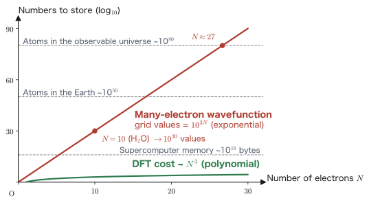

Chapter 1The Many-Electron Problem and First-Principles Calculations
Matter is an assembly of atomic nuclei and electrons, and its behavior is governed by quantum mechanics. Therefore, if we take as input only the minimal information of “the atomic numbers and the number of electrons” and solve the Schrödinger equation, we should in principle be able to predict the properties of any material—crystal structure, binding energy, magnetism, optical spectra—without relying on experiment. This is the idea behind first-principles calculation. However, the Schrödinger equation of a many-electron system is hopelessly unsolvable as it stands. In this chapter, we first write down exactly the problem to be solved (the many-electron Hamiltonian), and then carefully introduce the system of units used in all later chapters (Hartree atomic units) and the Born–Oppenheimer approximation. On that basis, we estimate quantitatively “why methods that deal directly with the wave function break down,” and give an overview of the various methods that avoid this difficulty—above all density functional theory (DFT), the main subject of this book. This is the chapter that serves as the starting point for building each theory precisely in the chapters that follow.
- What a first-principles calculation is: the idea that the input is only the atomic numbers and the number of electrons, and the range of properties that can be predicted from it
- You will be able to write down the Hamiltonian of a many-electron system in SI units and explain the physical meaning of its five terms
- We carry out every step of the nondimensionalization of the Schrödinger equation of the hydrogen atom and derive the Bohr radius $a_0$ and the Hartree energy $E_h$. You will be able to use the conversion table between atomic units and SI units
- Derivation of the Born–Oppenheimer (adiabatic) approximation: you will be able to identify, in the equations, which terms are dropped and why
- You will understand the origin of the basic properties of the many-electron wave function (indistinguishability, antisymmetry, orthonormality)
- A quantitative estimate of the “curse of dimensionality,” and a classification of first-principles methods (CI, DFT, QMC, many-body Green's function methods)
1.1 Materials Science and First-Principles Calculations
Quantum mechanics, completed in the early twentieth century, gave materials science one grand promise. The forces acting between nuclei and electrons are all known to be Coulomb interactions, and the equation governing their motion (the Schrödinger equation, or the Dirac equation in the relativistic case) is also known. Then if we merely specify the kinds (atomic numbers) and numbers of the atoms that constitute a material, all of its properties should be predictable just by solving the equation. In 1929, immediately after the completion of quantum mechanics, Dirac saw through this situation and pointed out that the mathematical laws governing the whole of chemistry and most of physics were already completely known, and that the only remaining difficulty was that the equations are too complicated to be solved exactly [1]. In other words, at this point the theoretical task of materials science shifted from “discovering the laws” to “solving the equations.”
A method that calculates the properties of matter starting only from the fundamental laws of quantum mechanics and the physical constants, without using any experimentally measured parameters (lattice constants, effective masses, empirical potentials, etc.), is called a first-principles calculation or an ab initio calculation. “First principles” means that we assume only fundamental principles that cannot be traced back any further—here, quantum mechanics and the Coulomb interaction. The input is essentially
- the kinds $\{Z_I\}$ (atomic numbers) and numbers of the nuclei contained in the system,
- the number of electrons $N_e$ ($N_e=\sum_I Z_I$ for a neutral system),
- and, if necessary, the initial configuration of the nuclei $\{\bm{R}_I\}$ (the lattice and the basis for a crystal),
and there are no adjustable empirical parameters. This “absence of parameters” is precisely the source of the predictive power of first-principles calculations. The same framework and the same approximations can be applied to semiconductors, metals, molecules, and surfaces alike, and the properties of unknown materials can be calculated before experiments are carried out.
1.1.1 What can be calculated
The most basic output of a first-principles calculation is the total energy $E$ of the system. It may look like a plain quantity, but once the total energy can be calculated as a function $E(\{\bm{R}_I\})$ of the atomic configuration, a surprisingly large number of physical properties can be derived from it.
- Stable structures and lattice constants: The configuration that minimizes $E(\{\bm{R}_I\})$ is the equilibrium structure. The lattice constants of crystals and the bond lengths and bond angles of molecules are determined without any experimental information (in modern DFT calculations, lattice constants are typically reproduced to within about 1% of the experimental values).
- Energetics of bonding and cohesion: The dissociation energy of molecules, the cohesive energy of solids, defect formation energies, surface energies, and phase stability (energy differences between polymorphs).
- Mechanical properties: From the second derivative of the energy, the elastic constants, the bulk modulus, the phonon (lattice vibration) dispersion, and further the thermodynamic functions.
- Forces on atoms and dynamics: Using $\bm{F}_I=-\partial E/\partial\bm{R}_I$, we can carry out structural optimization and first-principles molecular dynamics, and trace the pathways and activation energies of chemical reactions.
- The electronic states themselves: The band structure, the density of states, the electron density distribution, and the work function. For magnetic materials, the spin density and magnetic moments, and the magnetic order (ferromagnetic or antiferromagnetic).
- Response and spectra: The dielectric constant, optical absorption, X-ray spectroscopy, vibrational spectroscopy (infrared and Raman), NMR shifts, and other quantities formulated as responses to external fields.
In materials science research, these calculations play three major roles. First, analysis and interpretation of experiments: identifying the electronic structure behind measured spectra and structural data. Second, materials design based on understanding of mechanisms: understanding at the level of electron theory why a given material is hard or why it is magnetic, and obtaining design guidelines for materials with desired functions. Third, materials search: screening the stability and properties of candidate materials by calculation before they are synthesized experimentally (an inverse-problem approach that seeks the structure from the function). In every case the equation is the same, and the path follows the single flow shown in Figure 1.1—input (atomic numbers) → many-electron Schrödinger equation → controlled approximations → prediction of properties.
Within this flow, the subject of this book is the stage of “controlled approximations,” in particular density functional theory (DFT). DFT reduces the many-electron problem to a practical computational cost by taking the electron density $\rho(\rr)$, a function of three variables, as the basic variable in place of the many-electron wave function. We outline the idea in §1.7 and carry out the exact formulation in later chapters. First, let us begin by writing down exactly the equation to be solved.
1.2 The Hamiltonian of a Many-Electron System
In this section we write down the nonrelativistic many-body Hamiltonian that describes atoms, molecules, and solids in SI units, and we check the physical meaning of each term. From the second half of this chapter onward we switch to atomic units (§1.3), but to make the change of units explicit we deliberately take SI units as the starting point.
1.2.1 Setting up the system
The system we consider consists of $N_e$ electrons and $N_n$ nuclei. We define the notation as follows.
- Electrons: position $\rr_i$ ($i=1,\dots,N_e$), mass $m_e$, charge $-e$ ($e \gt 0$ is the elementary charge)
- Nuclei: position $\bm{R}_I$ ($I=1,\dots,N_n$), mass $M_I$, charge $+Z_I e$ ($Z_I$ is the atomic number)
We make the following four assumptions. (i) Nonrelativistic quantum mechanics (relativistic effects become important for heavy elements, but in this book we mention them as corrections where necessary). (ii) The only interaction between particles is the static Coulomb interaction (quantization of the electromagnetic field and retardation effects are neglected). (iii) The nuclei are point charges (the internal structure of the nucleus is not considered). (iv) No external electromagnetic field is applied for the time being. Under these assumptions, all the information about the system is contained in the wave function
$$ \Psi(\rr_1,\dots,\rr_{N_e},\bm{R}_1,\dots,\bm{R}_{N_n},t) $$and its time evolution is determined by the time-dependent Schrödinger equation
\begin{equation} i\hbar\frac{\partial}{\partial t}\Psi = \hat{H}\Psi \label{eq:tdse} \end{equation}Here $\hbar = h/2\pi$ is the reduced Planck constant.
1.2.2 The five terms of the Hamiltonian
The Hamiltonian $\hat{H}$, as the sum of the kinetic energy and the Coulomb potential energy, can be written in SI units as follows.
\begin{equation} \hat{H} = \underbrace{-\sum_{i=1}^{N_e}\frac{\hbar^2}{2m_e}\nabla_i^2}_{\hat{T}_e} \underbrace{-\sum_{I=1}^{N_n}\frac{\hbar^2}{2M_I}\nabla_I^2}_{\hat{T}_n} \underbrace{-\sum_{i=1}^{N_e}\sum_{I=1}^{N_n}\frac{Z_I e^2}{4\pi\varepsilon_0\abs{\rr_i-\bm{R}_I}}}_{\hat{V}_{en}} +\underbrace{\sum_{i \lt j}^{N_e}\frac{e^2}{4\pi\varepsilon_0\abs{\rr_i-\rr_j}}}_{\hat{V}_{ee}} +\underbrace{\sum_{I \lt J}^{N_n}\frac{Z_I Z_J e^2}{4\pi\varepsilon_0\abs{\bm{R}_I-\bm{R}_J}}}_{\hat{V}_{nn}} \label{eq:h-si} \end{equation}Here $\nabla_i^2 = \partial^2/\partial x_i^2+\partial^2/\partial y_i^2+\partial^2/\partial z_i^2$ is the Laplacian with respect to the coordinates of the $i$th electron, and $\varepsilon_0$ is the vacuum permittivity. We now examine the meaning of the five terms in turn.
- $\hat{T}_e$: kinetic energy of the electrons. This is the operator corresponding to the classical $\bm{p}^2/2m_e$; by the quantum-mechanical prescription $\bm{p}\to-i\hbar\nabla$ it becomes $-\hbar^2\nabla^2/2m_e$. It is a quantity that grows larger the more rapidly the wave function varies in space (the more strongly it is localized), and it is because of this term that electrons do not “fall into” the nucleus but keep a finite extent. This term is the key to understanding the stability of matter and chemical bonding, and it plays the leading role in the virial theorem of Chapter 2.
- $\hat{T}_n$: kinetic energy of the nuclei. Its form is the same as that of $\hat{T}_e$, but because the mass $M_I$ is several thousand to several hundred thousand times the electron mass, the coefficient $\hbar^2/2M_I$ is overwhelmingly small. This fact is the basis of the Born–Oppenheimer approximation (§1.4).
- $\hat{V}_{en}$: electron–nucleus attraction. It is the Coulomb attraction between the charges $-e$ and $+Z_Ie$, so its sign is negative. It is the term that binds the electrons in matter, and without it matter would not exist. From the electrons' point of view, the nuclear configuration $\{\bm{R}_I\}$ can be regarded as creating an “external field,” so in later chapters we call it the external potential $v_{\mathrm{ext}}(\rr) = -\sum_I Z_I e^2/(4\pi\varepsilon_0\abs{\rr-\bm{R}_I})$. The “external potential” in the central concept of DFT, the “one-to-one correspondence between the external potential and the electron density,” refers to this term.
- $\hat{V}_{ee}$: electron–electron repulsion. Since it is between charges of the same sign, it is positive. This term is precisely the culprit that makes the many-electron problem a “many-body problem.” Without this term, the Hamiltonian would be a simple sum of terms for the individual electrons, and the problem could be separated into one-electron problems (separation of variables). Because of the electron–electron repulsion, the motion of any one electron depends on the positions of all the other electrons, and the wave function becomes a function in which $3N_e$ variables are entangled.
- $\hat{V}_{nn}$: nucleus–nucleus repulsion. In the context of solving for the electronic structure with the nuclear configuration fixed (§1.4), it enters merely as a constant, but it makes an essential contribution when we discuss structural stability or the forces acting on atoms.
A word about the summation notation. The $\sum_{i \lt j}$ in the electron–electron repulsion means “add once for every electron pair.” Using a sum over ordered pairs, the same sum can also be written as
\begin{equation} \sum_{i \lt j}^{N_e}\frac{e^2}{4\pi\varepsilon_0 \abs{\rr_i-\rr_j}} = \frac{1}{2}\sum_{i=1}^{N_e}\sum_{\substack{j=1 \\ j\neq i}}^{N_e}\frac{e^2}{4\pi\varepsilon_0 \abs{\rr_i-\rr_j}} \label{eq:pair-sym} \end{equation}In the unrestricted double sum on the right-hand side, the same electron pair $\{i,j\}$ is counted twice, as $(i,j)$ and as $(j,i)$, and moreover the summand is symmetric under the exchange of $i$ and $j$ (the denominator $\abs{\rr_i-\rr_j}$ is invariant under the exchange), so dividing by 2 means that each pair is counted once. Both notations are used in the literature, so be careful about the presence or absence of the factor $1/2$. The $j=i$ terms (the self-interaction of an electron) do not exist physically and are therefore excluded from the sum—we note in advance that this obvious fact will reappear later as the problem of the “self-interaction error” of approximate functionals in DFT.
Physical Meaning: The universality of this Hamiltonian
The remarkable feature of Eq. \eqref{eq:h-si} is its universality. The hydrogen molecule, DNA, an iron crystal, a semiconductor device—all of them are described by this Hamiltonian simply by changing $\{Z_I\}$, $N_e$, and $N_n$. There is no “law of force” that differs from one substance to another; the individuality of each substance appears entirely as the variety of solutions of one and the same equation. The differences between metals and insulators, the presence or absence of magnetism, and the differences in hardness and color are not differences in the assumptions put into the equation, but differences in the properties of the wave function that is its solution. That is exactly why, once a general method for solving this equation (even approximately) is established, it becomes a tool not for a particular substance but for materials science as a whole.
1.2.3 Stationary states: from the time-dependent equation to the time-independent equation
Eq. \eqref{eq:tdse} is a time-dependent equation, but $\hat{H}$ itself does not contain time. In this case the solution can be decomposed into a superposition of “stationary states,” and each stationary state satisfies the time-independent Schrödinger equation. Since this is the starting point for all later chapters, let us carry out the procedure of separation of variables without omitting any steps.
Derivation: Extracting the stationary states by separation of variables
We denote all the coordinates (electrons and nuclei) together as $\bm{X}=(\rr_1,\dots,\rr_{N_e},\bm{R}_1,\dots,\bm{R}_{N_n})$. Assuming that the solution is a product of a spatial part and a time part
$$ \Psi(\bm{X},t) = \psi(\bm{X})\,f(t) $$(the separation-of-variables assumption), we substitute it into Eq. \eqref{eq:tdse}. The time derivative on the left-hand side does not act on $\psi(\bm{X})$, and $\hat{H}$ on the right-hand side consists only of derivatives with respect to the spatial coordinates and multiplications, so it does not act on $f(t)$. Hence
\begin{equation} i\hbar\,\psi(\bm{X})\frac{\dd f(t)}{\dd t} = f(t)\,\hat{H}\psi(\bm{X}) \label{eq:sep1} \end{equation}holds. Dividing both sides by $\psi(\bm{X})f(t)$ in the region where $\psi(\bm{X})f(t)\neq 0$ (the zeros are filled in by continuity), we obtain
\begin{equation} i\hbar\,\frac{1}{f(t)}\frac{\dd f(t)}{\dd t} = \frac{\hat{H}\psi(\bm{X})}{\psi(\bm{X})} \label{eq:sep2} \end{equation}The left-hand side is a function of $t$ only, and the right-hand side is a function of $\bm{X}$ only. For the two to remain equal for arbitrary $t$ and $\bm{X}$, both sides must be constants that depend on neither $t$ nor $\bm{X}$ (this can be verified by the argument that the partial derivative of the left-hand side with respect to $t$ is zero, and the partial derivative of the right-hand side with respect to $\bm{X}$ is also zero). We let this separation constant be $E$. $E$ has the dimension of energy. Then Eq. \eqref{eq:sep2} splits into two equations. The time part is
\begin{equation} i\hbar\frac{\dd f}{\dd t} = E f \label{eq:f-ode} \end{equation}This is a first-order linear ordinary differential equation; rewriting it in the separated form $\dd f/f = -(iE/\hbar)\,\dd t$ and integrating both sides (using $\int \dd f/f = \ln f$), we obtain
$$ \ln f(t) = -\frac{iE}{\hbar}t + \text{const.} \quad\Longrightarrow\quad f(t) = f(0)\,e^{-iEt/\hbar} $$The constant $f(0)$ can be absorbed into the normalization of $\psi$, so we take $f(0)=1$. The spatial part is
\begin{equation} \hat{H}\psi(\bm{X}) = E\psi(\bm{X}) \label{eq:tise} \end{equation}that is, the eigenvalue problem of $\hat{H}$. From the above, the separated solution for a time-independent Hamiltonian is determined to be
$$ \Psi(\bm{X},t) = \psi(\bm{X})\,e^{-iEt/\hbar} $$In this state the probability density $\abs{\Psi}^2 = \abs{\psi}^2\abs{e^{-iEt/\hbar}}^2 = \abs{\psi}^2$ does not depend on time, so it is called a stationary state. By the completeness of the eigenstates, the solution for a general initial condition is expressed as a linear superposition of stationary states, $\Psi = \sum_n c_n \psi_n e^{-iE_n t/\hbar}$.
Eq. \eqref{eq:tise}, obtained in this derivation, is the equation we aim to solve throughout this book—the time-independent Schrödinger equation. In particular, the state $\psi_0$ with the smallest eigenvalue is called the ground state, and its eigenvalue $E_0$ is called the ground-state energy. The structure, bonding, and magnetism of matter at absolute zero are properties of the ground state, and what DFT deals with directly is, first of all, the ground state.
In the next section we sweep away the cluster of constants $\hbar$, $m_e$, $e$, and $4\pi\varepsilon_0$ that appear in Eq. \eqref{eq:h-si}. This not only makes the equations easier to read but also reveals what the “natural yardsticks” of the electron world are.
1.3 Atomic Units (Hartree Atomic Units)
Four constants, $\hbar$, $m_e$, $e$, and $4\pi\varepsilon_0$, appear repeatedly in Eq. \eqref{eq:h-si}. The SI units are built on the human-sized yardsticks of the meter, the kilogram, and the second, so describing the atomic world in them forces us to keep dragging along extreme numerical values such as $\hbar = 1.054572\times10^{-34}\,\mathrm{J\cdot s}$. We therefore reverse the point of view and rebuild the system of units around the natural yardstick for electrons. This is the Hartree atomic units (hereafter simply atomic units, a.u.).
Definition: Hartree atomic units
The system of units in which the values of the following four constants are set equal to 1 is called Hartree atomic units.
$$ \hbar = 1,\qquad m_e = 1,\qquad e = 1,\qquad 4\pi\varepsilon_0 = 1 $$That is, we take the unit of action to be $\hbar$, the unit of mass to be the electron mass $m_e$, the unit of charge to be the elementary charge $e$, and the coupling constant of the Coulomb force, $k_e=1/4\pi\varepsilon_0$, to be 1. The units of length, energy, time, and so on are derived units built from these four; the unit of length is the Bohr radius $a_0$ and the unit of energy is the Hartree energy $E_h$ (both are derived in this section). Unless otherwise stated, we use this system of units from here on throughout this book.
The operation of “setting a constant equal to 1” is often introduced out of the blue, but in fact it is the outcome of a systematic procedure, the nondimensionalization of an equation. Let us carry out this procedure step by step, taking the hydrogen atom, the “prototype” of the simplest many-electron system, as an example. The Bohr radius and the Hartree energy then emerge naturally, not as artificial definitions, but as scales intrinsic to the equation itself.
1.3.1 Nondimensionalization of the Schrödinger equation for the hydrogen atom
What we do next is as follows. For the time-independent Schrödinger equation of the hydrogen atom (in SI units), we perform a change of variables that re-measures lengths in terms of an unknown scale $a$, and bring the equation into dimensionless form. We then show that if $a$ is chosen so that “all the coefficients become 1,” this $a$ is none other than the Bohr radius.
Derivation: Emergence of the Bohr radius and the Hartree energy through nondimensionalization
Step 0 (starting point). The hydrogen atom is a single electron in the Coulomb field of a proton (charge $+e$) fixed at the origin. (We ignore the motion of the proton in the spirit of §1.4. Strictly speaking one should use the reduced mass, but that correction is of order $m_e/M_p\sim 5\times10^{-4}$ and does not affect the present discussion.) In SI units the time-independent Schrödinger equation is
\begin{equation} \left[-\frac{\hbar^2}{2m_e}\nabla^2 - \frac{e^2}{4\pi\varepsilon_0\, r}\right]\psi(\rr) = E\,\psi(\rr) \label{eq:hatom-si} \end{equation}Here $r=\abs{\rr}$ is the distance from the origin (the proton).
Step 1 (rescaling of length). We introduce an as yet undetermined constant $a$ with the dimension of length, and define a dimensionless coordinate $\tilde{\rr}$ by
$$ \rr = a\,\tilde{\rr} \qquad\Longleftrightarrow\qquad \tilde{\rr} = \rr/a $$We check how the differential operators transform, using the chain rule for the $x$ component. Since $\tilde{x} = x/a$, we have $\partial\tilde{x}/\partial x = 1/a$, and
\begin{align} \frac{\partial}{\partial x} &= \frac{\partial \tilde{x}}{\partial x}\frac{\partial}{\partial \tilde{x}} = \frac{1}{a}\frac{\partial}{\partial \tilde{x}}, \label{eq:chain1}\\[2pt] \frac{\partial^2}{\partial x^2} &= \frac{1}{a}\frac{\partial}{\partial \tilde{x}}\left(\frac{1}{a}\frac{\partial}{\partial \tilde{x}}\right) = \frac{1}{a^2}\frac{\partial^2}{\partial \tilde{x}^2} \label{eq:chain2} \end{align}(in the second line we used the fact that the constant $1/a$ can be taken outside the derivative). The $y,z$ components are the same, so the Laplacian transforms as
\begin{equation} \nabla^2 = \frac{1}{a^2}\tilde{\nabla}^2,\qquad \tilde{\nabla}^2 \equiv \frac{\partial^2}{\partial\tilde{x}^2}+\frac{\partial^2}{\partial\tilde{y}^2}+\frac{\partial^2}{\partial\tilde{z}^2} \label{eq:lap-scale} \end{equation}Also, the distance is $r = \abs{a\tilde{\rr}} = a\tilde{r}$ (with $a \gt 0$). Substituting these into Eq. \eqref{eq:hatom-si} gives
\begin{equation} \left[-\frac{\hbar^2}{2m_e a^2}\tilde{\nabla}^2 - \frac{e^2}{4\pi\varepsilon_0\,a}\,\frac{1}{\tilde{r}}\right]\psi = E\,\psi \label{eq:hatom-scaled1} \end{equation}The coefficient of the kinetic-energy term, $\hbar^2/(m_e a^2)$, and the coefficient of the potential term, $e^2/(4\pi\varepsilon_0 a)$, both have the dimension of energy (as they must, since the whole expression is set equal to the energy $E$).
Step 2 (nondimensionalizing the energy). We divide the whole equation by the energy scale built from the coefficient of the kinetic-energy term,
$$ \varepsilon_a \equiv \frac{\hbar^2}{m_e a^2} $$The coefficient of the first term becomes $\dfrac{\hbar^2}{2m_e a^2}\Big/\dfrac{\hbar^2}{m_e a^2} = \dfrac{1}{2}$. The coefficient of the second term is
\begin{equation} \frac{e^2}{4\pi\varepsilon_0 a}\Big/\frac{\hbar^2}{m_e a^2} = \frac{e^2}{4\pi\varepsilon_0 a}\cdot\frac{m_e a^2}{\hbar^2} = \frac{m_e e^2\, a}{4\pi\varepsilon_0 \hbar^2} \label{eq:coeff-ratio} \end{equation}(we converted the division into multiplication by the reciprocal and combined $a^2/a = a$). This is a dimensionless number. The equation has therefore taken the dimensionless form
\begin{equation} \left[-\frac{1}{2}\tilde{\nabla}^2 - \left(\frac{m_e e^2\, a}{4\pi\varepsilon_0\hbar^2}\right)\frac{1}{\tilde{r}}\right]\psi = \frac{E}{\varepsilon_a}\,\psi \label{eq:hatom-scaled2} \end{equation}Up to this point $a$ is arbitrary.
Step 3 (fixing the scale = the Bohr radius). We choose $a$ so that the dimensionless coefficient is exactly 1. That is,
\begin{equation} \frac{m_e e^2\, a}{4\pi\varepsilon_0\hbar^2} = 1 \qquad\Longrightarrow\qquad a = \frac{4\pi\varepsilon_0\hbar^2}{m_e e^2} \equiv a_0 \label{eq:a0-def} \end{equation}This length $a_0$ is the Bohr radius. Inserting numerical values gives $a_0 = 5.291772\times10^{-11}\,\mathrm{m} = 0.529177\,$Å (see the example below for the numerical calculation). Note that the requirement of nondimensionalization alone has uniquely determined the length scale inherent in the equation. The radius that Bohr derived from his orbit condition in the old quantum theory appears here as “the length at which the Coulomb term and the kinetic-energy term are on an equal footing.”
Step 4 (energy scale = the Hartree energy). We compute the energy scale $\varepsilon_{a_0}$ for $a=a_0$. Substituting the reciprocal of Eq. \eqref{eq:a0-def}, $\dfrac{1}{a_0} = \dfrac{m_e e^2}{4\pi\varepsilon_0\hbar^2}$, we obtain
\begin{align} \varepsilon_{a_0} = \frac{\hbar^2}{m_e a_0^2} &= \frac{\hbar^2}{m_e}\left(\frac{1}{a_0}\right)^2 \notag\\ &= \frac{\hbar^2}{m_e}\left(\frac{m_e e^2}{4\pi\varepsilon_0\hbar^2}\right)^2 \notag\\ &= \frac{\hbar^2}{m_e}\cdot\frac{m_e^2 e^4}{(4\pi\varepsilon_0)^2\hbar^4} \notag\\ &= \frac{m_e e^4}{(4\pi\varepsilon_0)^2\hbar^2} \equiv E_h \label{eq:eh-def} \end{align}From the first line to the second we substituted Eq. \eqref{eq:a0-def} for $1/a_0$; from the second line to the third we expanded the square of the parentheses; and from the third line to the fourth we canceled $m_e^2/m_e = m_e$ and $\hbar^4/\hbar^2$, leaving $\hbar^2$ in the denominator. This $E_h$ is the Hartree energy, whose value is $E_h = 4.359745\times10^{-18}\,\mathrm{J} = 27.2114\,\mathrm{eV}$.
Step 5 (the dimensionless equation). Writing $a=a_0$ and $\tilde{E}\equiv E/E_h$, Eq. \eqref{eq:hatom-scaled2} becomes
\begin{equation} \left[-\frac{1}{2}\tilde{\nabla}^2 - \frac{1}{\tilde{r}}\right]\psi = \tilde{E}\,\psi \label{eq:hatom-au} \end{equation}This is a purely mathematical eigenvalue problem in which no physical constants appear. It is precisely the equation of the hydrogen atom with “$\hbar=m_e=e=4\pi\varepsilon_0=1$.” In other words, atomic units are a shorthand for the nondimensionalization in which we have decided to measure lengths in units of $a_0$ and energies in units of $E_h$.
Let us summarize what we learned from the above derivation. (1) “Setting the constants equal to 1” is exactly equivalent to measuring lengths in units of $a_0$ and energies in units of $E_h$. (2) $a_0$ and $E_h$ are not artificial conventions but intrinsic scales of the problem of an electron in a Coulomb field. Indeed, the spatial extent of the ground-state wave function of the hydrogen atom is of the order of $a_0$, and its binding energy is of the order of $E_h$. The ground-state eigenvalue of Eq. \eqref{eq:hatom-au} is $\tilde{E}_0 = -1/2$ (treated in an exercise in Chapter 2), so the ground-state energy of the hydrogen atom is
$$ E_0 = -\frac{1}{2}\,E_h = -13.606\ \mathrm{eV} $$which reproduces the well-known Rydberg energy $13.6\,$eV (the ionization energy of hydrogen). The relation $1\,\mathrm{Ry} = E_h/2$ can also be read off from this. (Note that some references use Rydberg atomic units.)
Example: Computing the values of $a_0$ and $E_h$ from the CODATA constants
The values of the fundamental constants (CODATA recommended values, seven significant digits) are as follows.
$$ \hbar = 1.054572\times10^{-34}\ \mathrm{J\,s},\quad m_e = 9.109384\times10^{-31}\ \mathrm{kg},\quad e = 1.602177\times10^{-19}\ \mathrm{C},\quad k_e \equiv \frac{1}{4\pi\varepsilon_0} = 8.987552\times10^{9}\ \mathrm{kg\,m^3\,s^{-2}\,C^{-2}} $$Bohr radius. Rewriting Eq. \eqref{eq:a0-def} in terms of $k_e$ gives $a_0 = \hbar^2/(k_e m_e e^2)$. We compute the numerator and the denominator separately.
$$ \hbar^2 = (1.054572\times10^{-34})^2 = 1.112122\times10^{-68}\ \mathrm{J^2\,s^2} $$ $$ k_e m_e e^2 = (8.987552\times10^{9})\times(9.109384\times10^{-31})\times(1.602177\times10^{-19})^2 = 2.101607\times10^{-58}\ \mathrm{kg^2\,m^3\,s^{-2}} $$Checking the dimensions, $\dfrac{\mathrm{J^2\,s^2}}{\mathrm{kg^2\,m^3\,s^{-2}}} = \dfrac{\mathrm{kg^2\,m^4\,s^{-4}}\cdot\mathrm{s^2}}{\mathrm{kg^2\,m^3\,s^{-2}}} = \mathrm{m}$, which is indeed a length. The numerical value is
$$ a_0 = \frac{1.112122\times10^{-68}}{2.101607\times10^{-58}} = 5.291772\times10^{-11}\ \mathrm{m} = 0.529177\ \text{Å} $$Hartree energy. We substitute into $E_h = \hbar^2/(m_e a_0^2)$. Since $a_0^2 = 2.800285\times10^{-21}\,\mathrm{m^2}$ and $m_e a_0^2 = 9.109384\times10^{-31}\times2.800285\times10^{-21} = 2.550889\times10^{-51}\,\mathrm{kg\,m^2}$,
$$ E_h = \frac{1.112122\times10^{-68}}{2.550889\times10^{-51}} = 4.359745\times10^{-18}\ \mathrm{J} $$Dividing this by the elementary charge gives the value in electron volts:
$$ E_h = \frac{4.359745\times10^{-18}}{1.602177\times10^{-19}} = 27.2114\ \mathrm{eV} $$Furthermore, multiplying by Avogadro's number $N_A = 6.022141\times10^{23}\,\mathrm{mol^{-1}}$ gives the value per mole:
$$ E_h N_A = 4.359745\times10^{-18}\times 6.022141\times10^{23} = 2625.50\ \mathrm{kJ/mol} = 627.5\ \mathrm{kcal/mol} $$That is, $1\ \mathrm{Hartree} = 27.2114\ \mathrm{eV} = 627.5\ \mathrm{kcal/mol}$. These three expressions are needed frequently when moving back and forth between the physics literature (eV) and the chemistry literature (kcal/mol).
Math Note: General theory of nondimensionalizing units
The operation carried out above is a general procedure that can be applied to any physical equation. Let us organize the steps.
- List the dimensional constants in the equation. For the hydrogen atom they are the three constants $\hbar$, $m_e$, and $e^2/4\pi\varepsilon_0$ (the last combination always appears in this form only, so we count it as one).
- Count the fundamental dimensions involved. Here there are three: mass M, length L, and time T (charge does not appear independently, because $e^2/4\pi\varepsilon_0$ has the dimension $\mathrm{ML^3T^{-2}}$).
- Divide each variable by a characteristic scale to form dimensionless variables. As in $\rr = a\tilde{\rr}$ and $E = \varepsilon\tilde{E}$, we substitute the scales ($a$, $\varepsilon$, etc.) while leaving them undetermined.
- Divide the whole equation by the coefficient of one term, and fix the scales by setting the remaining dimensionless coefficients equal to 1. The number of scales that can be chosen independently equals the number of fundamental dimensions.
For the hydrogen atom, where the number of constants (3) and the number of fundamental dimensions (3) coincide, all the coefficients can be made 1, and no dimensionless parameter remains in the equation. This has a deep meaning: a nonrelativistic Coulomb system has no adjustable dimensionless constant. Every atom, molecule, and solid (apart from the integer called the atomic number) obeys the same single equation, and this is the dimensional-analysis expression of the universality of the Hamiltonian discussed in §1.2. On the other hand, adding one more constant changes the situation. If we add the speed of light $c$, we can form the dimensionless combination
$$ \alpha = \frac{e^2}{4\pi\varepsilon_0\hbar c} \simeq \frac{1}{137.036} $$(the fine-structure constant), which cannot be eliminated whatever system of units we choose. $\alpha$ is a genuine parameter expressing “the strength of relativistic effects,” and even in atomic units the value $c = 1/\alpha \simeq 137.036$ persists. We shall see shortly (§1.3.3) that this number appears in the criterion for whether relativity can be neglected.
1.3.2 The many-electron Hamiltonian in atomic units
Let us apply the recipe established for the hydrogen atom to the whole many-electron Hamiltonian \eqref{eq:h-si}. What we do next is the mechanical operation of scaling all coordinates (both electronic and nuclear) by $a_0$ and dividing the equation by $E_h$. There are only two kinds of terms, the kinetic-energy terms and the Coulomb terms, so it suffices to check the transformation of one of each.
Derivation: Nondimensionalization of the many-electron Hamiltonian
Scale all coordinates as $\rr_i = a_0\tilde{\rr}_i$ and $\bm{R}_I = a_0\tilde{\bm{R}}_I$.
Kinetic-energy term. As in Eq. \eqref{eq:lap-scale}, $\nabla_i^2 = a_0^{-2}\tilde{\nabla}_i^2$, so
\begin{align} -\frac{\hbar^2}{2m_e}\nabla_i^2 &= -\frac{\hbar^2}{2m_e a_0^2}\tilde{\nabla}_i^2 \notag\\ &= -\frac{1}{2}\left(\frac{\hbar^2}{m_e a_0^2}\right)\tilde{\nabla}_i^2 = -\frac{E_h}{2}\tilde{\nabla}_i^2 \label{eq:kin-scale} \end{align}In the last equality we used the relation $E_h = \hbar^2/(m_e a_0^2)$ obtained midway through Eq. \eqref{eq:eh-def}. The kinetic-energy term of the nuclei works the same way: $-\dfrac{\hbar^2}{2M_I}\nabla_I^2 = -\dfrac{m_e}{M_I}\cdot\dfrac{\hbar^2}{2m_e a_0^2}\tilde{\nabla}_I^2 = -\dfrac{E_h}{2(M_I/m_e)}\tilde{\nabla}_I^2$ (we multiplied the numerator and denominator by $m_e$ and factored out $E_h$). That is, in atomic units the mass of a nucleus is expressed by the dimensionless number $M_I/m_e$, “how many times the electron mass it is.”
Coulomb term. As a representative, we transform one term of the electron–electron repulsion. Since $\abs{\rr_i-\rr_j} = a_0\abs{\tilde{\rr}_i-\tilde{\rr}_j}$,
\begin{equation} \frac{e^2}{4\pi\varepsilon_0\abs{\rr_i-\rr_j}} = \frac{e^2}{4\pi\varepsilon_0 a_0}\cdot\frac{1}{\abs{\tilde{\rr}_i-\tilde{\rr}_j}} \label{eq:coul-scale1} \end{equation}Here we evaluate the coefficient $e^2/(4\pi\varepsilon_0 a_0)$. Substituting $1/a_0 = m_e e^2/(4\pi\varepsilon_0\hbar^2)$ (Eq. \eqref{eq:a0-def}), we obtain
\begin{equation} \frac{e^2}{4\pi\varepsilon_0 a_0} = \frac{e^2}{4\pi\varepsilon_0}\cdot\frac{m_e e^2}{4\pi\varepsilon_0\hbar^2} = \frac{m_e e^4}{(4\pi\varepsilon_0)^2\hbar^2} = E_h \label{eq:coul-scale2} \end{equation}(the last equality is just the definition in Eq. \eqref{eq:eh-def}), so we see that the natural magnitude of the Coulomb term is also $E_h$. The electron–nucleus attraction term and the internuclear repulsion term are exactly analogous, since only the distance in the denominator is scaled by $a_0$.
Summary. The whole Hamiltonian now has the form $\hat{H} = E_h\times(\text{dimensionless operator})$, so dividing both sides of the Schrödinger equation $\hat{H}\psi = E\psi$ by $E_h$ gives the dimensionless equation $\tilde{H}\psi = \tilde{E}\psi$ (with $\tilde{E}=E/E_h$).
From now on we drop the tildes and write under the convention “lengths in units of $a_0$, energies in units of $E_h$.” The resulting atomic-unit expression of the many-electron Hamiltonian is given below. Since this is the basic equation of the entire book, we put it in a highlighted frame.
Here $M_I$ is the mass of a nucleus in units of the electron mass (dimensionless; for a proton, for example, $M_I = 1836.15$). Compare this with Eq. \eqref{eq:h-si}. All the physical constants have disappeared, and only the structure—the kinetic energy and the three kinds of Coulomb interaction—remains. The equations in the following chapters are basically written in this form.
1.3.3 Derived units: time, velocity, and the conversion table
Once the mass, the charge, the action, and the Coulomb constant are fixed, the units of all other physical quantities are determined automatically. Let us derive the main ones.
Atomic unit of time. The exponent of the phase factor $e^{-iEt/\hbar}$ of a stationary state must be dimensionless, so the natural unit of time is $t_0 = \hbar/E_h$. Its numerical value is
\begin{equation} t_0 = \frac{\hbar}{E_h} = \frac{1.054572\times10^{-34}\ \mathrm{J\,s}}{4.359745\times10^{-18}\ \mathrm{J}} = 2.418884\times10^{-17}\ \mathrm{s} \simeq 24.2\ \text{attoseconds} \label{eq:time-au} \end{equation}This is roughly the time scale for an electron to go “once around” inside an atom, and it shows that electron dynamics belongs to the world of attoseconds ($10^{-18}\,$s). Conversely, $1\,\mathrm{fs} = 41.34\,$a.u., and from this we can get a feeling for how large the time step of first-principles molecular dynamics (typically $0.5$–$1\,$fs) is in atomic units.
Atomic unit of velocity. Dividing a length by a time gives $v_0 = a_0/t_0 = a_0 E_h/\hbar$. Simplifying this product leads to a transparent form. Multiplying $a_0 = 4\pi\varepsilon_0\hbar^2/(m_e e^2)$ and $E_h = m_e e^4/[(4\pi\varepsilon_0)^2\hbar^2]$, we obtain
\begin{align} a_0 E_h &= \frac{4\pi\varepsilon_0\hbar^2}{m_e e^2}\cdot\frac{m_e e^4}{(4\pi\varepsilon_0)^2\hbar^2} = \frac{e^2}{4\pi\varepsilon_0} \label{eq:a0Eh} \end{align}(the factors $\hbar^2$, $m_e$, one power of $4\pi\varepsilon_0$, and $e^2$ cancel). Therefore
\begin{equation} v_0 = \frac{a_0 E_h}{\hbar} = \frac{e^2}{4\pi\varepsilon_0\hbar} = \left(\frac{e^2}{4\pi\varepsilon_0\hbar c}\right) c = \alpha c = \frac{c}{137.036} = 2.187691\times10^{6}\ \mathrm{m/s} \label{eq:velocity-au} \end{equation}The atomic unit of velocity is $1/137$ of the speed of light; that is, the fine-structure constant $\alpha$ makes its appearance here. Since the typical speed of the electron in the ground state of the hydrogen atom is exactly $1\,$a.u. $=\alpha c$, electrons of light atoms are sufficiently nonrelativistic, and the nonrelativistic treatment in Eq. \eqref{eq:h-au} is justified. On the other hand, the speed of an innermost-shell ($1s$) electron of an atom with atomic number $Z$ is about $Z\,$a.u., so for elements with large $Z$ (for example, gold with $Z=79$ has $v/c \simeq 79/137 \simeq 0.58$) relativistic effects cannot be ignored. This simple estimate is all there is to the reason why scalar-relativistic corrections and the spin–orbit interaction are needed when treating heavy elements.
For the main physical quantities, the correspondence between atomic units and SI units is summarized in Table 1.1.
| Physical quantity | Value in atomic units | Definition (expression in SI constants) | Value in SI units |
|---|---|---|---|
| Mass | 1 | $m_e$ (electron mass) | $9.109384\times10^{-31}\ \mathrm{kg}$ |
| Charge | 1 | $e$ (elementary charge) | $1.602177\times10^{-19}\ \mathrm{C}$ |
| Action (angular momentum) | 1 | $\hbar = h/2\pi$ | $1.054572\times10^{-34}\ \mathrm{J\,s}$ |
| Coulomb constant | 1 | $k_e = 1/4\pi\varepsilon_0$ | $8.987552\times10^{9}\ \mathrm{kg\,m^3\,s^{-2}\,C^{-2}}$ |
| Length | 1 | $a_0 = 4\pi\varepsilon_0\hbar^2/(m_e e^2)$ (Bohr radius) | $5.291772\times10^{-11}\ \mathrm{m} = 0.529177$ Å |
| Energy | 1 | $E_h = m_e e^4/(4\pi\varepsilon_0\hbar)^2$ (Hartree) | $4.359745\times10^{-18}\ \mathrm{J} = 27.2114\ \mathrm{eV}$ |
| Time | 1 | $\hbar/E_h$ | $2.418884\times10^{-17}\ \mathrm{s}$ |
| Velocity | 1 | $v_0 = a_0E_h/\hbar = \alpha c$ | $2.187691\times10^{6}\ \mathrm{m\,s^{-1}}$ |
| Magnetic flux density | 1 | $\hbar/(e a_0^2)$ | $2.350518\times10^{5}\ \mathrm{T}$ |
| Magnetic dipole moment | 1 | $e\hbar/m_e = 2\mu_B$ | $1.854802\times10^{-23}\ \mathrm{J\,T^{-1}}$ |
The unit of magnetic flux density, $2.35\times10^{5}\,$T (235,000 tesla), tells us how “weak” a perturbation the steady magnetic fields that can be produced in a laboratory (tens of T) are. Also, the fact that the atomic unit of magnetic moment is twice the Bohr magneton $\mu_B$ will be useful when we check signs and coefficients in the chapter on spin magnetic moments.
Example: Getting used to energy-scale conversions
Here are some conversions that occur frequently in actual research. We take $1\,E_h = 27.2114\,\mathrm{eV} = 627.5\,\mathrm{kcal/mol} = 2625.5\,\mathrm{kJ/mol}$ as the reference.
- Chemical bonding: The dissociation energy (experimental value) of the H$_2$ molecule is $4.75\,\mathrm{eV} = 4.75/27.2114 = 0.1746\,E_h$. A typical covalent bond is about $0.1$–$0.4\,E_h$.
- Chemical accuracy: The “chemical accuracy” of $1\,\mathrm{kcal/mol}$, often quoted as the target accuracy for reaction energies, is $1/627.5 = 1.59\times10^{-3}\,E_h = 0.0434\,\mathrm{eV}$. The need to achieve this accuracy for systems whose total energies are tens to thousands of $E_h$ is the source of the numerical difficulty of first-principles calculations.
- Room temperature: $k_BT$ ($T=300\,$K) is $0.02585\,\mathrm{eV} = 9.50\times10^{-4}\,E_h \simeq 1\,\mathrm{kcal/mol}$. That thermal fluctuations and chemical accuracy are of the same order is no coincidence: the kinetics of chemical reactions is determined by thermal excitation at room temperature.
- Convergence criteria of DFT calculations: The energy convergence criterion of a self-consistent calculation is often set to about $10^{-6}$–$10^{-8}\,E_h$. We have $10^{-6}\,E_h \simeq 3\times10^{-5}\,\mathrm{eV}$.
Physical Meaning: Atomic units are a “life-size ruler for the electronic world”
The benefit of atomic units is not only that equations become shorter. In this system of units, quantities involved in atomic-scale phenomena are numbers of order 1. Bond lengths are a few a.u., the binding energies of valence electrons are $0.1$–$1$ a.u., and the speeds of valence electrons are $\sim 1$ a.u. If a calculation yields values such as $10^{6}$ or $10^{-9}$, that is a physical signal that something is off by orders of magnitude, too large or too small, and this is also useful for detecting unit-conversion mistakes and numerical errors. Conversely, the numbers that could not be eliminated by nondimensionalization—the nuclear mass ratio $M_I/m_e \sim 10^{3\text{–}5}$ and the speed of light $c = 137$—express the “true” relations of large and small in this world, and they govern the validity of the Born–Oppenheimer approximation (next section) and of the nonrelativistic approximation, respectively. What looks like the merely clerical task of arranging a system of units actually brings the structure of the approximations into relief.
1.4 The Born–Oppenheimer (Adiabatic) Approximation
The first, and most fundamental, approximation for solving the many-electron problem is the Born–Oppenheimer approximation (adiabatic approximation) [3]. Its gist is simple: “Nuclei are much heavier than electrons, so from the electrons’ point of view the nuclei are almost at rest. Therefore we may first fix the nuclei and solve the problem of the electrons alone, and consider the motion of the nuclei afterwards.” However, turning this intuition into equations involves a good deal of structure worth learning, and unless we state explicitly which terms were dropped, we cannot correctly recognize the situations in which this approximation breaks down (photochemical reactions, electron–lattice interaction, and so on). In this section we derive it without omitting any steps. For the system of units we use the atomic units introduced in the previous section.
1.4.1 Estimating the mass ratio
The starting point is the mass ratio. Even for the proton, the lightest nucleus,
\begin{equation} \frac{m_e}{M_p} = \frac{9.109384\times10^{-31}\ \mathrm{kg}}{1.672622\times10^{-27}\ \mathrm{kg}} = \frac{1}{1836.15} \simeq 5.45\times10^{-4} \label{eq:mass-ratio} \end{equation}holds; for example, for a carbon nucleus ($^{12}$C) we have $M/m_e = 12\times1822.89 \simeq 2.19\times10^4$, and for transition metals it reaches the order of $10^5$ ($1\,\mathrm{u} = 1822.89\,m_e$). Looking at Eq. \eqref{eq:h-au}, we see that only the kinetic-energy term of the nuclei has a small coefficient $1/M_I \lesssim 10^{-3}$, while all the other terms are $O(1)$. We exploit this asymmetry.
1.4.2 The electronic Hamiltonian and the adiabatic basis
What we do next consists of the following three steps. (1) Split the Hamiltonian into “the kinetic energy of the nuclei” and “everything else,” and prepare the set of eigenfunctions of the latter (the electronic Hamiltonian) for each nuclear configuration. (2) Expand the total wave function in this set of eigenfunctions and substitute it into the total Schrödinger equation, which yields an exact set of simultaneous equations for the nuclear wave functions. (3) Confirm that the terms that cause the coupling (the nonadiabatic coupling terms) are proportional to $1/M_I$, and drop them.
First we split the Hamiltonian. Abbreviating the electron coordinates collectively as $\rr \equiv (\rr_1,\dots,\rr_{N_e})$ and the nuclear coordinates collectively as $\bm{R} \equiv (\bm{R}_1,\dots,\bm{R}_{N_n})$, we write
\begin{equation} \hat{H} = \hat{T}_n + \hat{H}_e(\bm{R}), \qquad \hat{T}_n = -\sum_{I=1}^{N_n}\frac{1}{2M_I}\nabla_I^2 \label{eq:h-split} \end{equation} \begin{equation} \hat{H}_e(\bm{R}) = -\frac{1}{2}\sum_{i=1}^{N_e}\nabla_i^2 - \sum_{i=1}^{N_e}\sum_{I=1}^{N_n}\frac{Z_I}{\abs{\rr_i-\bm{R}_I}} + \sum_{i \lt j}^{N_e}\frac{1}{\abs{\rr_i-\rr_j}} + \sum_{I \lt J}^{N_n}\frac{Z_I Z_J}{\abs{\bm{R}_I-\bm{R}_J}} \label{eq:h-elec} \end{equation}We call $\hat{H}_e(\bm{R})$ the electronic Hamiltonian. The important point here is that $\bm{R}$ is not differentiated inside $\hat{H}_e$; that is, $\bm{R}$ enters not as an operator but as a parameter (the internuclear repulsion $\hat{V}_{nn}$ is a constant term that contains no electron coordinates, but following convention we include it in $\hat{H}_e$. This way, the potential energy surface that appears later becomes a surface of the “total energy,” which is convenient).
For each fixed nuclear configuration $\bm{R}$, we can consider the eigenvalue problem of the electronic Hamiltonian
This is called the electronic Schrödinger equation; its eigenfunctions $\Phi_k(\rr;\bm{R})$ are called the adiabatic electronic states, and its eigenvalue $E_k(\bm{R})$ is called the $k$th adiabatic potential energy surface (PES). The $\bm{R}$ after the semicolon is a notation expressing “dependence as a parameter.” At each $\bm{R}$, $\{\Phi_k\}$ forms a complete orthonormal set as functions of the electron coordinates:
\begin{equation} \braket{\Phi_l|\Phi_k}_{\rr} \equiv \int \Phi_l^*(\rr;\bm{R})\,\Phi_k(\rr;\bm{R})\,\dd\rr = \delta_{lk} \quad(\text{for any }\bm{R}\text{}) \label{eq:phi-ortho} \end{equation}Here $\int\dd\rr$ is the integral over all electron coordinates (including the spin sum when spin is included; §1.5), and the subscript $\rr$ makes explicit that “we integrate only over the electron coordinates, and $\bm{R}$ remains.”
1.4.3 The Born–Huang expansion and the exact simultaneous equations
We expand the total wave function $\Psi(\rr,\bm{R})$ in the adiabatic electronic states at each nuclear configuration:
\begin{equation} \Psi(\rr,\bm{R}) = \sum_k \chi_k(\bm{R})\,\Phi_k(\rr;\bm{R}) \label{eq:born-huang} \end{equation}This is called the Born–Huang expansion [3,4]. The expansion coefficient $\chi_k(\bm{R})$ is a function of the nuclear coordinates and is interpreted as “the nuclear wave function on the electronic state $k$.” Up to this point there is no approximation: for each fixed $\bm{R}$, $\{\Phi_k(\cdot\,;\bm{R})\}$ is a complete set in the function space of the electron coordinates, so any $\Psi$ can always be written in this form (at the price that the coefficients $\chi_k$ depend on $\bm{R}$).
Derivation: The exact simultaneous equations for the nuclear wave functions
We substitute the expansion \eqref{eq:born-huang} into the total Schrödinger equation $(\hat{T}_n + \hat{H}_e)\Psi = E\Psi$. First, the action of $\hat{H}_e$ is simple. Since $\hat{H}_e$ acts only on the electron coordinates ($\chi_k(\bm{R})$ passes straight through), using the eigenvalue equation \eqref{eq:elec-se} we obtain
\begin{equation} \hat{H}_e\sum_k \chi_k\Phi_k = \sum_k \chi_k\,\hat{H}_e\Phi_k = \sum_k \chi_k\,E_k(\bm{R})\,\Phi_k \label{eq:he-action} \end{equation}Next we compute the action of $\hat{T}_n$. Because $\Phi_k(\rr;\bm{R})$ depends on $\bm{R}$ as a parameter, note that $\nabla_I$ acts on both $\chi_k$ and $\Phi_k$. We use the product rule twice. First, the first derivative is
\begin{equation} \nabla_I(\chi_k\Phi_k) = (\nabla_I\chi_k)\Phi_k + \chi_k(\nabla_I\Phi_k) \label{eq:prod1} \end{equation}Applying $\nabla_I\cdot$ once more to both sides and using the product rule again on each term on the right-hand side, we obtain
\begin{align} \nabla_I^2(\chi_k\Phi_k) &= \nabla_I\cdot\big[(\nabla_I\chi_k)\Phi_k\big] + \nabla_I\cdot\big[\chi_k(\nabla_I\Phi_k)\big] \notag\\ &= (\nabla_I^2\chi_k)\Phi_k + (\nabla_I\chi_k)\cdot(\nabla_I\Phi_k) + (\nabla_I\chi_k)\cdot(\nabla_I\Phi_k) + \chi_k(\nabla_I^2\Phi_k) \notag\\ &= (\nabla_I^2\chi_k)\Phi_k + 2(\nabla_I\chi_k)\cdot(\nabla_I\Phi_k) + \chi_k(\nabla_I^2\Phi_k) \label{eq:prod2} \end{align}(in the second line the same cross term appears twice, so we combined them into a coefficient of 2). Therefore
\begin{equation} \hat{T}_n(\chi_k\Phi_k) = -\sum_I\frac{1}{2M_I}\Big[(\nabla_I^2\chi_k)\Phi_k + 2(\nabla_I\chi_k)\cdot(\nabla_I\Phi_k) + \chi_k(\nabla_I^2\Phi_k)\Big] \label{eq:tn-action} \end{equation}The first term is the one in which “only the nuclear wave function is differentiated,” and the second and third terms are those in which “the nuclear-coordinate dependence of the electronic wave function is differentiated.” It is the latter that cause transitions between electronic states (nonadiabatic transitions).
We insert Eqs. \eqref{eq:he-action} and \eqref{eq:tn-action} into the total Schrödinger equation, multiply from the left by $\Phi_l^*(\rr;\bm{R})$, and integrate over the electron coordinates (projection onto the state $l$). By the orthogonality \eqref{eq:phi-ortho}, in the terms where $\Phi_k$ remains as it is, only $k=l$ survives:
\begin{align} &\braket{\Phi_l|\textstyle\sum_k \chi_k E_k\Phi_k}_{\rr} = E_l(\bm{R})\,\chi_l(\bm{R}), \qquad \braket{\Phi_l|\textstyle\sum_k (\nabla_I^2\chi_k)\Phi_k}_{\rr} = \nabla_I^2\chi_l(\bm{R}) \notag \end{align}On the other hand, in the terms containing $\nabla_I\Phi_k$ and $\nabla_I^2\Phi_k$ the orthogonality cannot be used, and the matrix elements
\begin{equation} \bm{F}_{lk}^{I}(\bm{R}) \equiv \braket{\Phi_l|\nabla_I\Phi_k}_{\rr}, \qquad G_{lk}^{I}(\bm{R}) \equiv \braket{\Phi_l|\nabla_I^2\Phi_k}_{\rr} \label{eq:coupling-def} \end{equation}remain. We call $\bm{F}_{lk}^I$ the first-order nonadiabatic coupling vector (also called the derivative coupling), and $G_{lk}^I$ the second-order nonadiabatic coupling. Summarizing the above, the equation for the nuclear wave function $\chi_l$ is
\begin{equation} \Big[-\sum_I\frac{1}{2M_I}\nabla_I^2 + E_l(\bm{R})\Big]\chi_l(\bm{R}) \;-\;\sum_k\sum_I\frac{1}{2M_I}\Big[2\bm{F}_{lk}^{I}\cdot\nabla_I + G_{lk}^{I}\Big]\chi_k(\bm{R}) = E\,\chi_l(\bm{R}) \label{eq:coupled} \end{equation}This is still exact. The nuclear wave functions $\chi_k$ of all electronic states $k$ are coupled to one another through the second sum, and the full complexity of the many-electron problem is preserved here.
Let us read off the structure of the resulting Eq. \eqref{eq:coupled}. If there were no second sum (the nonadiabatic coupling terms), the equations would become independent for each electronic state $l$, and the picture “the nuclei move in the potential $E_l(\bm{R})$” would hold exactly. All the coupling terms carry the small coefficient $1/2M_I$. We therefore introduce the following approximations.
Definition: The adiabatic approximation and the Born–Oppenheimer approximation
In Eq. \eqref{eq:coupled},
- Adiabatic approximation: Ignore all the off-diagonal terms that connect different electronic states ($\bm{F}_{lk}^I$ and $G_{lk}^I$ with $k\neq l$). The system remains on a single potential energy surface $E_l(\bm{R})$.
- Born–Oppenheimer approximation: Ignore the diagonal terms ($k=l$) as well. The equation for the nuclei becomes \begin{equation} \Big[-\sum_I\frac{1}{2M_I}\nabla_I^2 + E_l(\bm{R})\Big]\chi_l(\bm{R}) = E\,\chi_l(\bm{R}) \label{eq:bo-final} \end{equation} .
In this book, “the BO approximation” without qualification refers to the latter. The intermediate approximation that retains only the diagonal terms (the diagonal Born–Oppenheimer correction, DBOC) is used in high-accuracy molecular calculations.
1.4.4 How small are the terms we dropped?
We check the validity of dropping the nonadiabatic coupling terms from two angles.
(i) Suppression by the mass ratio. The coupling terms have the form $\dfrac{1}{2M_I}\big[2\bm{F}^I_{lk}\cdot\nabla_I + G^I_{lk}\big]$ and explicitly carry a factor $1/M_I \sim 10^{-3}$–$10^{-5}$. On the other hand, $\bm{F}^I_{lk}$ and $G^I_{lk}$ measure how sensitive the electronic wave function is to the nuclear coordinates; since the electronic structure changes on the scale of a bond length ($\sim$ a few a.u.), they are typically $O(1)$ (a.u.). Therefore the energy contribution of the coupling terms is suppressed to $10^{-3}$ or less relative to the spacing of the electronic energies ($O(0.1$–$1)\,E_h$).
(ii) Suppression by the energy gap. More precisely, one can show that the magnitude of the off-diagonal coupling $\bm{F}^I_{lk}$ is inversely proportional to the energy difference between the electronic states. This is an important relation, so we derive it.
Derivation: The relation between the nonadiabatic coupling and the energy gap (Hellmann–Feynman-type formula)
We differentiate both sides of the electronic eigenvalue equation \eqref{eq:elec-se} with respect to the nuclear coordinate $\bm{R}_I$ (since the nuclear coordinates are parameters, this is an ordinary partial derivative). Using the product rule on the left-hand and right-hand sides respectively, we obtain
\begin{equation} (\nabla_I\hat{H}_e)\Phi_k + \hat{H}_e(\nabla_I\Phi_k) = (\nabla_I E_k)\Phi_k + E_k(\nabla_I\Phi_k) \label{eq:hf-step1} \end{equation}Here $\nabla_I\hat{H}_e$ is the operator obtained by differentiating only the terms in $\hat{H}_e$ that depend explicitly on $\bm{R}_I$ (the electron–nucleus attraction and the internuclear repulsion). Multiplying from the left by $\Phi_l^*$ ($l\neq k$) and integrating over the electron coordinates, each term becomes
\begin{align} \braket{\Phi_l|(\nabla_I\hat{H}_e)|\Phi_k} + \braket{\Phi_l|\hat{H}_e|\nabla_I\Phi_k} &= (\nabla_I E_k)\underbrace{\braket{\Phi_l|\Phi_k}}_{=0} + E_k\braket{\Phi_l|\nabla_I\Phi_k} \label{eq:hf-step2} \end{align}(the first term on the right-hand side vanished by the orthogonality \eqref{eq:phi-ortho}). In the second term on the left-hand side we use the Hermiticity of $\hat{H}_e$ to let $\hat{H}_e$ act on the $\Phi_l$ on the left: $\braket{\Phi_l|\hat{H}_e|\nabla_I\Phi_k} = \braket{\hat{H}_e\Phi_l|\nabla_I\Phi_k} = E_l\braket{\Phi_l|\nabla_I\Phi_k}$ ($E_l$ is real). Moving this to the other side and rearranging, we obtain
\begin{equation} \braket{\Phi_l|(\nabla_I\hat{H}_e)|\Phi_k} = (E_k - E_l)\braket{\Phi_l|\nabla_I\Phi_k} \;\;\Longrightarrow\;\; \bm{F}^I_{lk} = \frac{\braket{\Phi_l|(\nabla_I\hat{H}_e)|\Phi_k}}{E_k(\bm{R}) - E_l(\bm{R})} \quad(l\neq k) \label{eq:f-offdiag} \end{equation}The numerator is the matrix element of the nuclear-coordinate derivative of the potential (the force operator) and is a quantity of $O(1)$, and the denominator is the energy gap between the electronic states.
From Eq. \eqref{eq:f-offdiag} the limits of applicability of the BO approximation can be read off quantitatively. The larger the gap between the electronic states (the farther the ground state is from the excited states), the smaller the coupling and the better the BO approximation. Conversely, in regions where two PESs approach or cross ($E_k \simeq E_l$, so-called conical intersections or avoided crossings), $\bm{F}^I_{lk}$ grows divergently and the BO approximation breaks down. Photochemistry, such as the nonradiative relaxation of molecules after photoexcitation and the isomerization of visual pigments, is precisely the physics of this region of breakdown. Moreover, in metals the gap between occupied and unoccupied states is zero, so when discussing the electron–lattice interaction (electrical resistance due to phonons, superconductivity) the dropped terms must be picked up again as a perturbation. Within the scope of this book (the structure and binding energy in the ground state), the BO approximation is an extremely good approximation, and from here on we take it as a premise.
A word about the diagonal terms as well. The first-order diagonal coupling $\bm{F}^I_{ll}$ is identically zero when the electronic wave function can be taken to be a real function (when time-reversal symmetry is present). This follows from the normalization condition: differentiating both sides of $\braket{\Phi_l|\Phi_l} = 1$ with respect to $\bm{R}_I$ gives
\begin{equation} 0 = \nabla_I\braket{\Phi_l|\Phi_l} = \braket{\nabla_I\Phi_l|\Phi_l} + \braket{\Phi_l|\nabla_I\Phi_l} = 2\braket{\Phi_l|\nabla_I\Phi_l} = 2\bm{F}^I_{ll} \label{eq:f-diag-zero} \end{equation}(we used that $\braket{\nabla_I\Phi_l|\Phi_l} = \braket{\Phi_l|\nabla_I\Phi_l}$ holds for a real function). Hence the only diagonal term actually dropped in the adiabatic approximation is the second-order $G^I_{ll}$, which merely gives an $O(1/M_I)$ correction to the PES (DBOC) (end-of-chapter Exercise 1.3).
1.4.5 The concept of the potential energy surface
As a consequence of the BO approximation, the picture that is the foundation of chemistry and materials science is established: “the atomic nuclei move on the potential energy surface $E_0(\bm{R})$ created by the electrons.” $E_0(\bm{R})$ is a function of $3N_n$ variables, and its landscape governs everything about the structure and dynamics of the material:
- Local minima $\nabla_{\bm{R}}E_0 = 0$ (with a positive definite Hessian) are stable and metastable structures. The deepest minimum is the ground-state structure, and the other minima correspond to polymorphs and isomers.
- The curvature around a minimum (the Hessian matrix $\partial^2 E_0/\partial R_{I\alpha}\partial R_{J\beta}$) gives the vibrational frequencies and phonons.
- The pass (saddle point) connecting two minima is the transition state of a chemical reaction or a structural phase transition, and the height of the pass is the activation energy.
- The gradient of the surface $\bm{F}_I = -\nabla_{I}E_0(\bm{R})$ is the force acting on the atoms, and it is the driving force of structural optimization and first-principles molecular dynamics.
In practice, most of a first-principles calculation comes down to “solving the electronic Schrödinger equation \eqref{eq:elec-se} (approximately, by DFT) and evaluating $E_0(\bm{R})$ and its gradient.” Figure 1.2 shows schematically the PES in the simplest case, a diatomic molecule (here it is a function of the single variable, the internuclear distance $R$, so it is a potential curve).
Example: Ratios of the electronic, vibrational, and rotational energy scales
The internal structure of the BO approximation can be observed as the separation of the three energy scales that appear in molecular spectra. Let us estimate it from the mass ratio alone. We work in atomic units.
Electronic excitation: Since the electrons are confined to a region $a_0 \sim 1$, the kinetic energy is $\sim\hbar^2/(m_e a_0^2) = 1\,E_h$. Hence the spacing of the electronic levels is $\Delta E_{\mathrm{el}} \sim 1\,E_h$ ($\sim$ a few eV).
Molecular vibration: The curvature (spring constant) $k$ around the minimum of the PES is determined by the electronic structure, so in atomic units $k \sim E_h/a_0^2 \sim 1$. The harmonic frequency of the nuclei (mass $M$) is $\omega = \sqrt{k/M}$, so
$$ \hbar\omega = \hbar\sqrt{\frac{k}{M}} \sim \sqrt{\frac{\hbar^2 E_h}{M a_0^2}} = \sqrt{\frac{m_e}{M}\cdot\underbrace{\frac{\hbar^2}{m_e a_0^2}}_{=E_h}\cdot E_h} = \left(\frac{m_e}{M}\right)^{1/2} E_h $$(we multiplied the numerator and denominator under the square root by $m_e$ to create two factors of $E_h$). With $m_e/M \sim 10^{-4}$, $\hbar\omega \sim 10^{-2}\,E_h \sim 0.1\,\mathrm{eV}$. This is consistent with the observed molecular vibrations (several hundred to several thousand cm$^{-1}$, that is, $0.01$–$0.4\,$eV).
Molecular rotation: For the moment of inertia $I \sim M a_0^2$, the spacing of the rotational levels is $\hbar^2/I \sim (m_e/M)\,E_h \sim 10^{-4}\,E_h \sim$ meV.
That is, the hierarchy $\Delta E_{\mathrm{el}} : \hbar\omega : \Delta E_{\mathrm{rot}} \sim 1 : (m_e/M)^{1/2} : (m_e/M)$ follows from the mass ratio alone. The original paper of Born and Oppenheimer [3] derived precisely this hierarchy as a systematic perturbation theory with $(m_e/M)^{1/4}$ as the expansion parameter.
Physical Meaning: The origin of the name “adiabatic”
When the nuclei move slowly, the electrons adjust “instantaneously” to (one of) the eigenstates for the nuclear configuration at each moment and follow it while keeping the state label $k$—this is exactly the situation of the adiabatic theorem of quantum mechanics (if the Hamiltonian is changed slowly, the system remains in an eigenstate). The name “adiabatic approximation” comes from this. It has no direct relation to adiabatic in the thermodynamic sense, in which no heat flows in or out, so do not confuse the two. Note also that the assumption that the electrons remain in the ground state is valid for discussions of structures and bonding near absolute zero, but it breaks down for photoexcitation and for nonequilibrium dynamics at high temperature. These are still actively studied today as “nonadiabatic dynamics.”
With the above, the many-electron problem has been reduced to “a problem of the electrons alone with the nuclear configuration as a parameter, Eq. \eqref{eq:elec-se}.” In the following chapters, unless otherwise stated, we deal with the electronic Schrödinger equation \eqref{eq:elec-se}, and write $\hat{H}_e$ simply as $\hat{H}$ and $E_0(\bm{R})$ simply as $E$. In the next section, we confirm the basic symmetry that this electronic wave function $\Phi(\rr_1,\dots,\rr_{N_e})$ must satisfy.
1.5 Basic Properties of the Many-Electron Wave Function
In the preceding sections we narrowed down the equation to be solved to the electronic Schrödinger equation \eqref{eq:elec-se}. Writing down the equation, however, does not by itself fix the problem. The eigenvalue problem is determined only when we specify “which functions are admitted as candidate solutions”—that is, the boundary conditions and the symmetry. For a many-electron system, this specification is not a mathematical convenience; it is a very strong restriction that follows from the physical fact that electrons are indistinguishable. In this section we derive that restriction step by step, stating the assumptions explicitly. The antisymmetry obtained here is the principle that governs the whole of Chapter 5 (Slater determinants and the Hartree–Fock method) and Chapter 6 (second quantization), and its detailed consequences—the exchange integral, the Fermi hole, and the quantitative expression of the Pauli exclusion principle—are developed there. This section is devoted entirely to laying the foundation.
Let us first organize the notation. From now on we write the number of electrons simply as $N$ ($N \equiv N_e$). The dependence on the nuclear coordinates $\bm{R}$ is always understood to be in the background as a parameter, in the sense of §1.4, and we do not write it out each time. The many-electron wave function is written $\Psi$ (it is the adiabatic electronic state $\Phi_k(\rr;\bm{R})$ of §1.4 with the spin variables introduced below made explicit and with the state index $k$ and the parameter $\bm{R}$ omitted).
1.5.1 Spin and the composite variable
Looking again at the electronic Hamiltonian of Eq. \eqref{eq:h-elec}, we see that no operator representing spin appears in it at all. This is because, in the nonrelativistic approximation, neither the Coulomb interaction nor the kinetic energy pays any attention to spin. Nevertheless, we cannot omit spin when discussing electronic structure, for two reasons. First, an electron is a particle with spin $1/2$, and to specify completely the state of a single electron we need not only the spatial coordinates but also the direction of the spin. Second, the antisymmetry requirement derived below is imposed on variables that include spin, so if spin is dropped the requirement itself cannot even be written. We therefore introduce a variable that combines the spatial coordinates and the spin coordinate.
Definition: The composite variable $x=(\rr,\sigma)$ and the integral symbol
We define the state variable of a single electron as the pair of the spatial coordinates $\rr$ and the spin variable $\sigma$,
$$ x \equiv (\rr,\sigma),\qquad \sigma \in \{\uparrow,\downarrow\} $$where $\sigma=\uparrow$ denotes the spin $z$ component $s_z=+1/2$ and $\sigma=\downarrow$ denotes $s_z=-1/2$ (in atomic units $\hbar=1$, so $s_z$ is the dimensionless number $\pm1/2$). The integral symbol with respect to $x$ is a shorthand that means both the spatial integral and the spin sum:
\begin{equation} \int \dd x \;(\cdots) \;\equiv\; \sum_{\sigma=\uparrow,\downarrow}\int \dd^3 r\;(\cdots) \label{eq:spin-int} \end{equation}The wave function of an $N$-electron system is written $\Psi(x_1,x_2,\dots,x_N)$. It is a function of $3N$ continuous variables and $N$ binary variables.
The fact that the Hamiltonian does not act on spin is not only harmless but useful. The operator $\hat{H}_e$ commutes with each component of the total spin operator $\hat{\bm{S}}=\sum_i\hat{\bm{s}}_i$, so the eigenfunctions can be chosen to be simultaneous eigenfunctions of $\hat{H}_e$, $\hat{S}^2$, and $\hat{S}_z$. That is, states can be classified by the quantum numbers “energy $E$, total spin $S$, and its $z$ component $M_S$.” This classification becomes essential when we treat open-shell systems in Chapter 5. Conversely, if relativistic corrections such as the spin–orbit interaction are added, this commutativity is lost, and spin and orbit can no longer be separated (as we saw in §1.3.3, this is an effect that becomes important for heavy elements).
1.5.2 Probabilistic interpretation, normalization, and orthogonality of eigenfunctions
We extend Born's probabilistic interpretation to many-electron systems. The quantity $\abs{\Psi(x_1,\dots,x_N)}^2\,\dd^3r_1\cdots\dd^3r_N$ is the joint probability that “electron 1 is found with spin $\sigma_1$ in the infinitesimal volume $\dd^3r_1$ around $\rr_1$, and electron 2 is found with $\sigma_2$ around $\rr_2$, $\dots$” Since the total probability, summed over all space and all spin configurations, must equal 1, the normalization condition
\begin{equation} \int \dd x_1\int \dd x_2\cdots\int \dd x_N\;\abs{\Psi(x_1,\dots,x_N)}^2 = 1 \label{eq:psi-norm} \end{equation}is imposed. By the convention of Eq. \eqref{eq:spin-int}, this means a $3N$-fold spatial integral together with a sum over $2^N$ spin configurations. The set of functions satisfying this condition (the space of square-integrable functions) is the set of candidate solutions of the eigenvalue problem \eqref{eq:elec-se}.
Next we verify that eigenfunctions belonging to different energy eigenvalues are orthogonal. You may already know this from general quantum mechanics, but it is worth confirming that the same argument carries over unchanged to many-electron systems, and in particular why the boundary term in the integration by parts drops out (this orthogonality was already used in Eq. \eqref{eq:phi-ortho} of §1.4).
Derivation: Hermiticity of $\hat{H}_e$ and orthonormality of the eigenfunctions
Step 1 (Hermiticity). An operator $\hat{A}$ is said to be Hermitian if, for arbitrary (normalizable) functions $f,g$,
\begin{equation} \int \dd x_1\cdots \dd x_N\; f^*\,(\hat{A}g) = \int \dd x_1\cdots \dd x_N\; (\hat{A}f)^*\,g \label{eq:herm-def} \end{equation}holds. Below we abbreviate this as $\braket{f|\hat{A}g} = \braket{\hat{A}f|g}$. The operator $\hat{H}_e$ is made up of “multiplication by a real function” and the “Laplacian.” The former (the Coulomb potential) is obviously Hermitian: multiplication is the same regardless of the order, and if the potential is real, taking the complex conjugate leaves it unchanged. The problem is the latter.
For $-\tfrac12\nabla_i^2$, we compute the difference between the left-hand and right-hand sides of Eq. \eqref{eq:herm-def}. First we use the vector-analysis identity
$$ \nabla_i\cdot\big(f^*\nabla_i g\big) = \nabla_i f^*\cdot\nabla_i g + f^*\nabla_i^2 g $$(this is simply the product rule applied to the divergence of a vector field). Solving this for $f^*\nabla_i^2 g$ and integrating over the coordinates of the $i$th electron, we obtain
\begin{align} \int \dd^3 r_i\; f^*\nabla_i^2 g &= \int \dd^3 r_i\;\nabla_i\cdot\big(f^*\nabla_i g\big) - \int \dd^3 r_i\;\nabla_i f^*\cdot\nabla_i g \notag\\ &= \oint_{S_\infty} \big(f^*\nabla_i g\big)\cdot \dd\bm{S} \;-\; \int \dd^3 r_i\;\nabla_i f^*\cdot\nabla_i g \label{eq:herm-lap} \end{align}In the second line we used Gauss's divergence theorem to rewrite the volume integral as a surface integral over the closed surface $S_\infty$ at infinity. Here we state explicitly why the boundary term vanishes. The wave function of a bound state decays exponentially as $r_i\to\infty$ ($f\sim e^{-\kappa r_i}$, $\kappa=\sqrt{2\abs{E}}\gt 0$). On the other hand, the area of a sphere of radius $R$ is $4\pi R^2$, which is merely polynomial growth. Therefore the surface integral behaves as $R^2 e^{-2\kappa R}\to 0$ and vanishes as $R\to\infty$. The point here is that exponential decay always beats polynomial growth. (When we deal with functions that do not decay, such as scattering states, a different prescription is needed: imposing periodic boundary conditions so that the surface itself is eliminated. We use this in Chapters 3 and 12.)
Therefore
$$ \int \dd^3 r_i\; f^*\nabla_i^2 g = -\int \dd^3 r_i\;\nabla_i f^*\cdot\nabla_i g $$holds. If we carry out the same calculation with the roles of $f$ and $g$ interchanged, we get $\int (\nabla_i^2 f)^* g = -\int \nabla_i f^*\cdot\nabla_i g$ (taking the complex conjugate does not change a real differential operation), and the right-hand sides of the two are exactly identical. Hence
$$ \int \dd^3 r_i\; f^*\nabla_i^2 g = \int \dd^3 r_i\;(\nabla_i^2 f)^*\,g $$that is, the Laplacian is Hermitian, and consequently $\hat{H}_e$ as a whole is Hermitian.
Step 2 (the eigenvalues are real). Suppose $\hat{H}_e\Psi_n = E_n\Psi_n$ and $\braket{\Psi_n|\Psi_n}=1$. Applying Hermiticity with $f=g=\Psi_n$, we obtain
$$ \braket{\Psi_n|\hat{H}_e\Psi_n} = E_n\braket{\Psi_n|\Psi_n} = E_n, \qquad \braket{\hat{H}_e\Psi_n|\Psi_n} = E_n^*\braket{\Psi_n|\Psi_n} = E_n^* $$(in the second expression, the complex conjugate acts on the function on the left, so $E_n^*$ appears). The two are equal, so $E_n = E_n^*$; that is, $E_n$ is a real number. The self-evident fact that energies are real is guaranteed by Hermiticity.
Step 3 (orthogonality). Consider two eigenfunctions with $E_m \neq E_n$. Applying Hermiticity with $f=\Psi_m$ and $g=\Psi_n$, we obtain
\begin{align} E_n\braket{\Psi_m|\Psi_n} &= \braket{\Psi_m|\hat{H}_e\Psi_n} \notag\\ &= \braket{\hat{H}_e\Psi_m|\Psi_n} = E_m^*\braket{\Psi_m|\Psi_n} = E_m\braket{\Psi_m|\Psi_n} \label{eq:eig-real} \end{align}(in the last equality we used the result $E_m^*=E_m$ of Step 2). Moving terms to one side, we get
$$ (E_n - E_m)\braket{\Psi_m|\Psi_n} = 0 $$By assumption $E_n-E_m\neq0$, so we must have $\braket{\Psi_m|\Psi_n}=0$. In the degenerate case ($E_m=E_n$, $m\neq n$) this argument cannot be used, but it suffices to carry out Gram–Schmidt orthogonalization within the subspace spanned by the eigenfunctions belonging to the same eigenvalue. Thus the set of eigenfunctions can always be chosen so as to satisfy
\begin{equation} \braket{\Psi_m|\Psi_n} = \int \dd x_1\cdots\dd x_N\;\Psi_m^*\,\Psi_n = \delta_{mn} \label{eq:orthonormal} \end{equation}This is called orthonormality.
1.5.3 From indistinguishability to the exchange phase
From here on we come to the heart of this section. In classical mechanics, we can distinguish individual particles by attaching numbers to them and tracking their trajectories. In quantum mechanics this is not possible. The wave packets of electrons overlap, and once two electrons have overlapped there is, in principle, no way to determine “which is which.” All electrons have completely identical properties (mass, charge, spin), and exchanging them does not change the physical situation—this is called indistinguishability. We now turn this physical requirement into an equation.
First, let us confirm that the Hamiltonian itself is symmetric under relabeling of the electrons. Writing it out for a two-electron system (the same holds for general $N$), Eq. \eqref{eq:h-elec} becomes
\begin{equation} \hat{H}_e = -\frac{1}{2}\nabla_1^2 - \frac{1}{2}\nabla_2^2 + v_{\mathrm{ext}}(\rr_1) + v_{\mathrm{ext}}(\rr_2) + \frac{1}{\abs{\rr_1-\rr_2}} + \text{(constant)} \label{eq:h-symmetric} \end{equation}($v_{\mathrm{ext}}(\rr) = -\sum_I Z_I/\abs{\rr-\bm{R}_I}$ is the external potential introduced in §1.2, and the constant is the internuclear repulsion). If we interchange the labels $1$ and $2$ throughout this expression, the first and second terms are swapped, the third and fourth terms are swapped, and the fifth term remains as it is because $\abs{\rr_2-\rr_1}=\abs{\rr_1-\rr_2}$. Overall we return to exactly the same operator. In other words, the Hamiltonian knows nothing about how the electrons are numbered. The numbers are merely labels that we attached arbitrarily for the convenience of calculation.
We therefore define the exchange operation as an operator. The exchange operator $\hat{P}_{ij}$ is defined as the operation that interchanges the $i$th and $j$th arguments of the wave function,
$$ \hat{P}_{ij}\,\Psi(\dots,x_i,\dots,x_j,\dots) \equiv \Psi(\dots,x_j,\dots,x_i,\dots) $$From the definition it follows immediately that $\hat{P}_{ij}^2=\hat{1}$ (interchanging twice restores the original), and the symmetry of the Hamiltonian confirmed above is expressed as $[\hat{P}_{ij},\hat{H}_e]=0$.
The requirement of indistinguishability is that the probability density, which is an observable, does not change under exchange, that is,
\begin{equation} \abs{\Psi(x_1,x_2,\dots,x_N)}^2 = \abs{\Psi(x_2,x_1,\dots,x_N)}^2 \label{eq:indist} \end{equation}(to simplify the notation, below we argue in terms of the exchange of the first two arguments; the same holds for any other pair). If this equality failed, then by measuring the probability distribution precisely one could give a physical distinction between “electron number 1” and “electron number 2,” which would contradict the premise that electrons are identical particles. The restriction on the phase follows from this.
Derivation: The exchange phase is limited to $\pm1$
Step 1. Eq. \eqref{eq:indist} states that two complex numbers have equal absolute values. Two complex numbers with equal absolute values differ only by a phase factor of absolute value 1. Therefore there exists a real number $\alpha$ such that
\begin{equation} \Psi(x_1,x_2,\dots) = e^{i\alpha}\,\Psi(x_2,x_1,\dots) \label{eq:phase} \end{equation}holds. Here we assume that $\alpha$ is a constant independent of the coordinates. The reason is that the operation of exchange is a property of the kind of particle itself, which does not depend on “where it is performed” (for the case in which this assumption is relaxed, see the Caution below).
Step 2. Since Eq. \eqref{eq:phase} is a relation that does not depend on how the variables are named, the form obtained by interchanging the names of $x_1$ and $x_2$,
$$ \Psi(x_2,x_1,\dots) = e^{i\alpha}\,\Psi(x_1,x_2,\dots) $$also holds. Substituting this into the right-hand side of Eq. \eqref{eq:phase} gives
\begin{align} \Psi(x_1,x_2,\dots) &= e^{i\alpha}\,\Psi(x_2,x_1,\dots) \notag\\ &= e^{i\alpha}\Big(e^{i\alpha}\,\Psi(x_1,x_2,\dots)\Big) \notag\\ &= e^{2i\alpha}\,\Psi(x_1,x_2,\dots) \label{eq:phase-twice} \end{align}From the first line to the second we merely substituted the relation above, and from the second line to the third we merely used the law of exponents $e^{i\alpha}e^{i\alpha}=e^{2i\alpha}$.
Step 3. Eq. \eqref{eq:phase-twice} expresses in a formula the obvious fact that “exchanging $\Psi$ twice returns the original $\Psi$.” Comparing both sides for a $\Psi$ that is not identically zero, we obtain
\begin{equation} e^{2i\alpha} = 1 \qquad\Longrightarrow\qquad e^{i\alpha} = \pm 1 \label{eq:pm-one} \end{equation}The last implication follows because, setting $z\equiv e^{i\alpha}$, we have $z^2=1$, that is, $(z-1)(z+1)=0$, which gives $z=\pm1$. The important point is that the phase, which could have been chosen continuously, has been discretized to one of two values.
A particle that chooses $e^{i\alpha}=+1$ (symmetric under exchange) is called a boson, and a particle that chooses $e^{i\alpha}=-1$ (antisymmetric under exchange) is called a fermion. Which one applies is fixed for each kind of particle. As an experimental fact, and as a consequence of the spin–statistics theorem [5] of relativistic quantum field theory, particles with half-integer spin are fermions and particles with integer spin are bosons. The electron has spin $1/2$ and is therefore a fermion, so the wave function of an electron system must satisfy the following.
That is, the wave function changes sign under the exchange of any two electrons. This is the fundamental restriction imposed on the many-electron wave function, and when we solve Eq. \eqref{eq:elec-se}, we must look for solutions only among functions with this symmetry. For a general rearrangement (permutation) $P$, the sign is determined by the parity of the number of transpositions when $P$ is decomposed into a product of transpositions, and we can write
\begin{equation} \Psi(x_{P(1)},x_{P(2)},\dots,x_{P(N)}) = \mathrm{sgn}(P)\,\Psi(x_1,x_2,\dots,x_N) \label{eq:antisym-N} \end{equation}We explain the meaning of the symbol $\mathrm{sgn}(P)$ in a self-contained way in the following Math Note, because the Slater determinant of Chapter 5 is defined precisely as a sum weighted by this sign.
Math Note: Permutations, transpositions, and the sign of a permutation
Permutation. A one-to-one map $P$ from $\{1,2,\dots,N\}$ to itself is called a permutation. $P$ is an instruction for rearrangement: “send $1$ to $P(1)$, $2$ to $P(2)$, $\dots$”. The set of all permutations forms a group with the composition of maps as the product (the symmetric group $S_N$ of degree $N$), and it has $N!$ elements (count as follows: there are $N$ possible destinations for $1$, $N-1$ remaining possible destinations for $2$, $\dots$). Even for $N=10$ there are $10!=3\,628\,800$ permutations.
Transposition. A permutation that interchanges only two elements and leaves the others fixed is called a transposition. Any permutation can be written as a product of transpositions. The procedure is simple: “if the destination of $1$ is not $1$, multiply by the transposition that interchanges $1$ and $P(1)$ to fix $1$ in its correct position. Then do the same for $2$. $\dots$” By repeating this operation, we arrive at the identity permutation after at most $N-1$ transpositions.
Sign. The way of decomposing is not unique (for example, multiplying by the same transposition twice more does not change the result). However, the parity of the number of transpositions is constant, independent of the way of decomposing. This can be seen as follows. Consider the polynomial $\displaystyle \Delta(t_1,\dots,t_N)=\prod_{i \lt j}(t_i-t_j)$, and consider replacing the variables by $t_i \to t_{P(i)}$ for a permutation $P$. Each factor $(t_i-t_j)$ is merely carried to another factor $\pm(t_k-t_l)$, so $\Delta$ is carried to $\pm\Delta$. A single transposition can be checked directly to multiply this sign by exactly $-1$, so if $P$ is decomposed into $m$ transpositions, the sign is $(-1)^m$. But the result $\Delta \to \pm\Delta$ is determined by $P$ alone and does not depend on the decomposition, so $(-1)^m$ does not depend on the decomposition either. We write this value as $\mathrm{sgn}(P)\equiv(-1)^m$ and call it the sign of the permutation. A permutation that can be decomposed into an even number of transpositions is called an even permutation ($\mathrm{sgn}=+1$), and one that can be decomposed into an odd number is called an odd permutation ($\mathrm{sgn}=-1$).
Properties. From the definition it follows immediately that $\mathrm{sgn}(PQ)=\mathrm{sgn}(P)\,\mathrm{sgn}(Q)$ and $\mathrm{sgn}(P^{-1})=\mathrm{sgn}(P)$ (just line up the decompositions of $P$ and $Q$). If you recall that this sign appears in the definition of the determinant, $\det A=\sum_P \mathrm{sgn}(P)\prod_i A_{i,P(i)}$, you may anticipate that the determinant is the natural tool for constructing a function that satisfies Eq. \eqref{eq:antisym-N}. This is the Slater determinant (Chapter 5).
Math Note: May we assume the phase to be a constant?
The point at which we assumed the phase $\alpha$ to be a constant in Eq. \eqref{eq:phase} is one on which beginners tend to get stuck. Even if the phase depended on the coordinates as $\alpha(x_1,x_2)$, the argument of Steps 2 and 3 would require $\alpha(x_1,x_2)+\alpha(x_2,x_1)=2\pi n$ ($n$ an integer). Furthermore, for the exchange operation to be compatible with the superposition of states (the linearity of quantum mechanics), $\alpha$ must be a constant common to all states. In addition, in three-dimensional space the path along which two particles are interchanged can be “unknotted” by continuous deformation, so it can be shown topologically that the phase is limited to $\pm1$ regardless of the path. In two-dimensional space this “unknotting” does not occur, and particles for which $e^{i\alpha}$ takes values other than $\pm1$ (anyons) are allowed in principle. The quasiparticles of the fractional quantum Hall effect are an actual example, but in the three-dimensional bulk electron systems treated in this book the value is always $-1$.
1.5.4 Direct consequences of antisymmetry
Eq. \eqref{eq:antisym2} is not a mere sign convention. Conclusions that decisively determine the structure of matter follow from it immediately.
The Pauli exclusion principle. In Eq. \eqref{eq:antisym2}, consider the case $x_i = x_j = x$, that is, the case in which two electrons are in exactly the same state in both spatial coordinates and spin. The left- and right-hand sides refer to the same function value, so
\begin{equation} \Psi(\dots,x,\dots,x,\dots) = -\,\Psi(\dots,x,\dots,x,\dots) \quad\Longrightarrow\quad 2\Psi(\dots,x,\dots,x,\dots)=0 \quad\Longrightarrow\quad \Psi(\dots,x,\dots,x,\dots)=0 \label{eq:pauli-zero} \end{equation}follows (we moved the right-hand side to the left to get $2\Psi=0$ and divided both sides by 2). That is, the probability that two electrons have the same composite variable $x$ is zero. This is the expression of the Pauli exclusion principle at the level of the wave function. It is often stated that “two electrons cannot enter the same quantum state,” and the prototype of that statement is exhausted by this two-line calculation. In Chapter 5 we will see that this consequence is translated into the orbital-picture statement that “the same spin orbital cannot be doubly occupied.”
The exchange hole. Eq. \eqref{eq:pauli-zero} is not a statement about the single point $x_i=x_j$ alone. Since the wave function is a continuous function, $\Psi$ must also be small in the neighborhood of $x_i \to x_j$. The coincidence of the composite variables means “the same position” and “the same spin,” so the conclusion is that two electrons with the same spin cannot approach each other. Each electron is accompanied by a region in which the probability of finding an electron of the same spin is suppressed: the exchange hole (also called the Fermi hole). This is an “effective repulsion” of quite different origin from the Coulomb repulsion between charges, and it arises purely from the symmetry of the wave function. The exchange hole acts in the direction of lowering the energy of the electron–electron repulsion, and that gain is the exchange energy. A quantitative treatment is given in Chapter 5 (the Hartree–Fock exchange term) and Chapter 7 (the exchange energy of the homogeneous electron gas). Note that if the spins are antiparallel ($\sigma_i\neq\sigma_j$), then $x_i\neq x_j$, so Eq. \eqref{eq:pauli-zero} requires nothing. From the standpoint of antisymmetry, it is allowed for two electrons of antiparallel spin to be at the same place (in reality they avoid each other because of the Coulomb repulsion. This effect is correlation, and it is the main subject of Chapters 7 and 11).
Physical Meaning: Antisymmetry creates the volume of matter
The seemingly formal requirement of antisymmetry underlies the most basic property of the matter around us—that matter has a finite volume and is not easily crushed when pushed. If electrons were bosons, all electrons would fall into the single orbital of lowest energy, atoms would lose their shell structure, and neither the periodic table nor chemical bonding would exist. Because antisymmetry drives the electrons one after another into higher energy levels, atoms acquire shells, elements acquire individuality, and chemistry becomes possible. The free electrons in a metal have a Fermi energy (a few eV) far larger than the thermal energy at room temperature for the same reason, and the degeneracy pressure that supports white dwarfs and neutron stars against gravitational collapse has the same origin. The single minus sign in Eq. \eqref{eq:antisym2} lies behind all of these.
1.5.5 Definition of the electron density
At the end of this section, we define the quantity that plays the leading role in DFT, the electron density, from the many-electron wave function. Here too, indistinguishability plays an essential role.
First, we define “the probability density of finding the $i$th electron in the state of the composite variable $x$” by integrating out all the variables of the other electrons:
$$ P_i(x) \equiv \int \dd x_1\cdots\dd x_{i-1}\,\dd x_{i+1}\cdots \dd x_N\; \abs{\Psi(x_1,\dots,x_{i-1},x,x_{i+1},\dots,x_N)}^2 $$But since electrons carry no labels, $P_i$ itself is not an observable quantity. What can be observed is “the probability density that an electron, whichever one, is found there,” and that is the sum over each $i$,
$$ n(x) = \sum_{i=1}^{N} P_i(x) $$Here antisymmetry takes effect. From Eq. \eqref{eq:antisym2}, $\abs{\Psi}^2$ is invariant under the interchange of any arguments (the sign $-1$ disappears when squared). Therefore, if in the integrand of $P_i(x)$ we interchange the first argument and the $i$th argument and further rename the integration variables, $P_i(x)$ coincides exactly with $P_1(x)$. Since all $N$ terms are equal, the sum is simply $N$ times one of them, and we obtain
$$ n(x) = N\,P_1(x) = N\int \dd x_2\cdots \dd x_N\;\abs{\Psi(x,x_2,\dots,x_N)}^2 $$Finally, taking the spin sum so as to look only at the spatial distribution without distinguishing spin, we obtain the definition of the electron density.
Definition: Electron density
\begin{equation} \rho(\rr) \;\equiv\; N \sum_{\sigma}\int \dd x_2\cdots \dd x_N\; \abs{\Psi\big((\rr,\sigma),x_2,\dots,x_N\big)}^2 \label{eq:rho-def} \end{equation}$\rho(\rr)\,\dd^3r$ is the expectation value of the number of electrons found in the infinitesimal volume $\dd^3 r$. The quantity with $\sigma$ fixed, without taking the spin sum, is called the spin density $\rho_\sigma(\rr)$, and we decompose $\rho=\rho_\uparrow+\rho_\downarrow$ and $m=\rho_\uparrow-\rho_\downarrow$ (the magnetization density).
Let us check that this definition counts the number of electrons correctly. Integrating Eq. \eqref{eq:rho-def} over all space, we obtain
\begin{align} \int \dd^3 r\;\rho(\rr) &= N\sum_\sigma \int \dd^3 r\int \dd x_2\cdots\dd x_N\;\abs{\Psi\big((\rr,\sigma),x_2,\dots,x_N\big)}^2 \notag\\ &= N\int \dd x_1 \int \dd x_2\cdots\dd x_N\;\abs{\Psi(x_1,x_2,\dots,x_N)}^2 \notag\\ &= N\cdot 1 = N \label{eq:rho-norm} \end{align}From the first line to the second, we merely rewrote the spatial integral and the spin sum together as $\int\dd x_1$ of Eq. \eqref{eq:spin-int}. From the second line to the third, we used the normalization condition \eqref{eq:psi-norm}. Therefore $\int\rho\,\dd^3r=N$; that is, the integral of the electron density equals the number of electrons. This is a natural result, but this relation will be used repeatedly later in DFT as the constraint that conserves the number of particles, and as the foothold for introducing the Lagrange multiplier (the chemical potential) (Chapters 4, 9, and 10).
Let us pause here and be aware of the difference in the amount of information between $\Psi$ and $\rho$. While $\Psi$ is a complex function of $3N$ continuous variables, $\rho$ is a real function of three variables no matter how many electrons there are. $\rho$ is merely a derived quantity built from $\Psi$, and it clearly loses information. Nevertheless, as far as the ground state is concerned, $\rho$ determines everything about the system. This is the Hohenberg–Kohn theorem (Chapter 9), and it is the reason DFT works. To get a feel for what this means, in the next section we check numerically how hopeless the approach of treating $\Psi$ directly is.
1.6 Why It Cannot Be Solved Directly: The Curse of Dimensionality
The Born–Oppenheimer approximation has reduced the problem to be solved to the electron-only eigenvalue problem \eqref{eq:elec-se}. The nuclear degrees of freedom have disappeared, and the equation has become a partial differential equation in $3N$ variables. At this point it seems that we can simply leave the rest to a computer and solve it numerically. But that is not how things turn out. In this section we check what “cannot be solved” means, not as a matter of attitude, but through concrete numbers. To state the conclusion first: the difficulty is not that the equation is mathematically hard, but that the amount of information needed just to write down the solution exceeds the physically available resources by an astronomical margin.
1.6.1 The wave function is a function on a $3N$-dimensional space
First we confirm the point that beginners are most likely to misunderstand. The many-electron wave function $\Psi(x_1,x_2,\dots,x_N)$ is not “$N$ functions placed in three-dimensional space.” It is a single function defined on a $3N$-dimensional configuration space. For $N=1$ it is the familiar three-dimensional orbital, but already for $N=2$ it is a function of six dimensions, and for $N=10$ a function of 30 dimensions.
If the electron–electron repulsion $\hat{V}_{ee}$ did not exist, the situation would be completely different. When $\hat{V}_{ee}=0$, the Hamiltonian becomes a simple sum of one-electron Hamiltonians, $\hat{H}=\sum_i \hat{h}(x_i)$, the variables can be separated, and the solution can be written in the product form
$$ \Psi(x_1,\dots,x_N) = \varphi_1(x_1)\varphi_2(x_2)\cdots\varphi_N(x_N) $$(we do not yet consider antisymmetrization). In this case the required information is “$N$ three-dimensional functions,” which grows only linearly with $N$. When $\hat{V}_{ee}$ is present, however, the place where a given electron is found depends on the positions of all the other electrons, and this product form breaks down. $\Psi$ becomes a function in which the $3N$ variables are inseparably entangled, and the required amount of information grows exponentially with $N$. This is the essential difficulty of the many-body problem, and it is the reason we called $\hat{V}_{ee}$ the “culprit” (§1.2.2).
1.6.2 An estimate with a real-space grid
To count the amount of information concretely, we consider the most naive numerical representation. We represent the coordinates of one electron by an equally spaced grid in a cube of side $L$, and discretize each Cartesian component with $p$ points. Then there are $p^3$ grid points per electron, and in the configuration space of $N$ electrons
\begin{equation} (\text{total number of lattice points}) = \underbrace{p^3\times p^3\times\cdots\times p^3}_{N\ \text{factors}} = p^{3N} \label{eq:grid-count} \end{equation}points, at each of which one value of $\Psi$ must be recorded. A double-precision real number takes 8 bytes, so the required storage capacity is
\begin{equation} (\text{required number of bytes}) = 8\times p^{3N}\ \mathrm{B} \label{eq:grid-bytes} \end{equation}Note that $N$ appears in the exponent. Writing $p^{3N} = e^{3N\ln p}$ makes it clear that this is an exponential function of $N$. Each time one electron is added, the required amount is multiplied by $p^3$.
Example: Storing the wave function of a water molecule on a $p=10$ grid
First, we check how loose this estimate is. Take $p=10$ and a box of side $L=10\,a_0$ ($\simeq 5.3$ Å), which accommodates an atom or a small molecule; the grid spacing is then $h = L/p = 1\,a_0 = 0.53$ Å. The electron density changes sharply on a scale of about $0.1\,a_0$ near the nucleus, so this spacing is entirely insufficient in practice. Even so, we obtain the following numbers.
The number of electrons of a water molecule H$_2$O is $N = 8+1+1 = 10$. From Eq. \eqref{eq:grid-count}, the number of grid points is
$$ p^{3N} = 10^{3\times 10} = 10^{30} $$points. From Eq. \eqref{eq:grid-bytes}, the required storage capacity is
$$ 8\times 10^{30}\ \mathrm{B} = \frac{8\times10^{30}}{10^{12}}\ \mathrm{TB} = 8\times 10^{18}\ \mathrm{TB} \simeq 10^{19}\ \mathrm{TB} $$(we simply divided using $1\,\mathrm{TB}=10^{12}$ B). We show by comparison how absurd this number is.
- The main memory of a top-class supercomputer today is about $10$ PB $=10^{16}$ B. The required amount is $8\times10^{30}/10^{16} = 8\times10^{14}$ times that, that is, about 800 trillion supercomputers’ worth.
- The total amount of digital data held by humanity is estimated to be of the order of $10^{23}$ B (several hundred zettabytes). The required amount is $8\times10^{30}/10^{23} \simeq 10^{8}$ times that, a hundred million times.
- Even if it could be stored, applying the Hamiltonian just once requires a number of operations of the same order as the number of grid points, that is, about $10^{30}$ operations. Even with an exascale computer performing $10^{18}$ operations per second, this takes $10^{30}/10^{18} = 10^{12}$ seconds, and dividing by one year $=3.16\times10^{7}$ seconds gives about 30,000 years. Moreover, solving the eigenvalue problem requires repeating this many times.
Furthermore, to obtain practical accuracy one needs $h\simeq 0.1\,a_0$, that is, $p\simeq 100$. The number of grid points then becomes $100^{3N} = 10^{6N}$, which for $N=10$ is $10^{60}$—exceeding the number above by another 30 orders of magnitude. The effect of multiplying by the number of spin configurations, $2^N = 1024$, is completely negligible in the face of this explosion.
Table 1.2 summarizes the situation as the number of electrons is varied. It shows that even on the extremely coarse grid $p=10$, only up to four or five electrons can be stored in practice. The helium atom (two electrons) and the lithium atom (three electrons) can be solved even by this naive method, and in fact such direct numerical solutions are produced as high-accuracy reference values. However, the carbon atom (six electrons) is already unrealistic, and the water molecule (10 electrons) is hopeless.
| Number of electrons $N$ | Example of a corresponding system | Number of lattice points $10^{3N}$ | Required storage | Feasibility |
|---|---|---|---|---|
| 1 | H atom | $10^{3}$ | 8 kB | Trivial |
| 2 | He atom, H$_2$ molecule | $10^{6}$ | 8 MB | Possible on a laptop |
| 3 | Li atom | $10^{9}$ | 8 GB | Possible on a PC |
| 4 | Be atom | $10^{12}$ | 8 TB | Possible on a large computer |
| 5 | B atom | $10^{15}$ | 8 PB | Limit of the largest supercomputers |
| 6 | C atom | $10^{18}$ | 8 EB | Impossible |
| 10 | H$_2$O molecule | $10^{30}$ | $8\times10^{18}$ TB | Hopeless |
| 20 | Ca atom | $10^{60}$ | — | — |
| 100 | Small organic molecule | $10^{300}$ | — | — |
Please savor the last row. The total number of atoms in the observable universe is estimated to be about $10^{80}$. Even if each atom could be used as a one-byte memory element, we would fall short by 220 orders of magnitude in writing down the wave function of a 100-electron system. This is not a gap that technological progress can close. Even if computer performance doubles every two years following Moore's law, the number of electrons that can be handled increases by only one for every factor of $p^3=10^3$, which works out to about 20 years for each additional electron.
1.6.3 A basis-set expansion does not change the situation: combinatorial explosion
It is natural to think, “The grid is just too naive; we should use clever basis functions.” In fact, that is what the standard approach of quantum chemistry does. However, to state the conclusion first, the exponential growth does not disappear when the choice of basis is changed. This is because it is not a matter of the method of representation but a property of the problem itself.
The typical procedure is as follows. First, we prepare $M$ spin orbitals $\{\varphi_1,\dots,\varphi_M\}$ as the basis spanning the one-electron states ($M \gt N$). Next, we choose $N$ of them to construct an antisymmetric $N$-electron function (a Slater determinant, Chapter 5). One choice $I=\{i_1 \lt i_2 \lt \dots \lt i_N\}$ gives one determinant $\Phi_I$. Since the complete set of antisymmetric functions is spanned by these determinants, the exact wave function can be expanded as
\begin{equation} \Psi = \sum_{I} C_I\,\Phi_I \label{eq:ci-expand} \end{equation}This is called the configuration interaction (CI) expansion, and the one that includes all $I$ is called full CI. Within a given basis set, full CI is the exact solution.
The problem is the number of terms in the expansion. Since it is the number of ways to choose $N$ out of $M$,
\begin{equation} D = \binom{M}{N} = \frac{M!}{N!\,(M-N)!} \label{eq:ci-dim} \end{equation}determinants are needed. $D$ is the dimension of the CI expansion, and at the same time the dimension of the Hamiltonian matrix $H_{IJ}=\braket{\Phi_I|\hat{H}_e|\Phi_J}$ expressed in this basis. Let us look at concrete numbers.
Example: The dimension of full CI
- Water molecule, cc-pVDZ basis set. This basis set gives 24 spatial orbitals for H$_2$O. There are 10 electrons, divided into five $\uparrow$-spin and five $\downarrow$-spin electrons. Since the choice is made independently for each spin, the number of determinants is $$ D = \binom{24}{5}\times\binom{24}{5} = 42\,504^2 = 1.81\times10^{9} $$ that is, about 1.8 billion. Merely storing the double-precision coefficients $C_I$ takes $8\times1.81\times10^9 = 14.5$ GB. This is a scale that has actually been computed, but the basis set is a minimal one, and the full CI energy in this basis set still deviates from the exact solution by several kcal/mol.
- A somewhat larger system. For $M=100$ spin orbitals and $N=10$ electrons, $\displaystyle\binom{100}{10}=1.73\times10^{13}$, and for $M=200$, $N=20$, $\displaystyle\binom{200}{20}=1.61\times10^{27}$.
- Benzene, C$_6$H$_6$. With 42 electrons and 102 spatial orbitals in a medium-sized basis set, the number of determinants is $\displaystyle\binom{102}{21}^2 \simeq 1.1\times10^{43}$.
Furthermore, storing the Hamiltonian matrix as a dense matrix requires $D^2$ elements. Even for $D=10^{9}$, $D^2=10^{18}$ elements, which is again impossible. In practice, one uses an iterative diagonalization such as the Davidson method, and by computing only “matrix–vector products” without storing the matrix, one keeps the memory requirement to $O(D)$. But since $D$ itself grows exponentially, the wall does not move.
Math Note: The growth of binomial coefficients and Stirling's formula
Let us show carefully that $\displaystyle\binom{M}{N}$ grows exponentially with $N$. We consider the “stingiest” basis, that is, the case in which we prepare exactly twice as many spin orbitals as electrons ($M=2N$). This is the situation in which the basis has been reduced as far as possible.
As the asymptotic form of the factorial we use Stirling's formula
\begin{equation} n! \simeq \sqrt{2\pi n}\left(\frac{n}{e}\right)^{n}\qquad(n\gg1) \label{eq:stirling} \end{equation}(the skeleton of the proof is the integral approximation $\ln n! = \sum_{k=1}^n \ln k \simeq \int_1^n \ln x\,\dd x = n\ln n - n + 1$, and the coefficient $\sqrt{2\pi n}$ comes from a more precise estimate). We substitute this into $\displaystyle\binom{2N}{N} = \frac{(2N)!}{(N!)^2}$. Writing the numerator and the denominator separately, we have
\begin{align} \binom{2N}{N} &\simeq \frac{\sqrt{2\pi (2N)}\,\big(2N/e\big)^{2N}}{\Big[\sqrt{2\pi N}\,\big(N/e\big)^{N}\Big]^{2}} \notag\\[2pt] &= \frac{\sqrt{4\pi N}\;2^{2N}N^{2N}e^{-2N}}{2\pi N\;N^{2N}e^{-2N}} \notag\\[2pt] &= \frac{2\sqrt{\pi N}\;4^{N}}{2\pi N} = \frac{4^{N}}{\sqrt{\pi N}} \label{eq:central-binom} \end{align}From the first line to the second, we decomposed $(2N)^{2N}=2^{2N}N^{2N}$ in the numerator, and in the denominator we expanded the square, writing $(\sqrt{2\pi N})^2 = 2\pi N$ and $\big[(N/e)^N\big]^2 = N^{2N}e^{-2N}$. From the second line to the third, we canceled $N^{2N}e^{-2N}$, rewrote $\sqrt{4\pi N}=2\sqrt{\pi N}$ and $2^{2N}=4^N$, and finally combined $2\sqrt{\pi N}/(2\pi N) = 1/\sqrt{\pi N}$.
The result is clear. Ignoring the polynomial factor $1/\sqrt{\pi N}$, $\displaystyle\binom{2N}{N}\sim 4^{N}$, that is, the dimension grows by a factor of 4 with each added electron. A larger basis makes this base larger still. The approximate value at $N=20$ is $4^{20}/\sqrt{20\pi}=1.39\times10^{11}$, in good agreement with the exact value $\displaystyle\binom{40}{20}=1.38\times10^{11}$.
1.6.4 The exponential wall
In his Nobel lecture [6], Kohn called this situation the exponential wall, and went so far as to say that the many-body wave function is “not a legitimate scientific concept” for systems with more than $10^{3}$ electrons. The point is that a quantity that exists in principle does not function as a tool of science if it can be neither written down nor validated. Figure 1.3 shows the height of this wall in contrast to the computational cost of DFT ($O(N^3)$), which we will see later.

There is one more factor that makes the situation severe: the required relative accuracy. The all-electron energy of the benzene molecule is about $-232\,E_h$. On the other hand, a chemically meaningful discussion requires “chemical accuracy,” $1\ \mathrm{kcal/mol}=1.59\times10^{-3}\,E_h$ (the example in §1.3.3). Taking the ratio of the two gives
$$ \frac{1.59\times10^{-3}}{232} = 6.9\times10^{-6} $$so the total energy must be obtained to a relative accuracy of about $10^{-6}$. Moreover, what makes the problem difficult is that this tiny energy difference is not “small by accident”: it appears as the difference between a large positive quantity (the kinetic energy and the electron–electron repulsion) and a large negative quantity (the electron–nucleus attraction). Extracting a tiny difference accurately by subtracting huge numbers—this is the true nature of the numerical difficulty of first-principles calculations.
Physical Meaning: What does “unsolvable” mean?
The word “unsolvable” here means neither that the equation has no solution nor that it is mathematically too hard. A solution of Eq. \eqref{eq:elec-se} certainly exists, and in principle it is uniquely determined. The problem is that we can neither write that solution down, nor communicate it to others, nor verify whether it is correct. An object consisting of $10^{300}$ numbers has no place where humanity could receive it, even if God were to teach it to us. Therefore, research on the many-body problem is not an “effort to find the exact solution” but “an effort to design a method for extracting the physical quantities we want to know from an amount of information that can be handled.” This change of viewpoint is the common starting point of the methods classified in the next section, and in particular it is the core of the idea of DFT. Whereas $\Psi$ has $3N$ variables, the quantities we actually want to know—the total energy, the electron density, forces, the density of states—all carry far less information. Then is there not a way to obtain them directly without going through $\Psi$? DFT is one answer to this question.
Strategies for avoiding the exponential wall fall broadly into three classes. (i) Replace the basic variable: Instead of $\Psi$, adopt the electron density $\rho(\rr)$ (three variables) or the one-body Green's function $G(\rr,\rr';\omega)$ (seven variables) as the basic variable. DFT and the many-body Green's function method belong here. (ii) Sample stochastically: Give up covering the whole $3N$-dimensional space and pick out only the important regions with random numbers. This is the quantum Monte Carlo method. (iii) Restrict the form of the wave function cleverly: Assume for the functional form of $\Psi$ a structure with few parameters, and search for the best solution within that range. The Hartree–Fock method, the coupled-cluster method, and tensor-network methods belong here. In the next section we organize these and explain why this book chooses DFT.
1.7 Classification of First-Principles Methods
Facing the exponential wall, physics and chemistry in the latter half of the twentieth century opened up a number of detours. In this section we survey them and make clear what each one sacrifices and what it gains. The axis of classification is simple: what to choose as the basic variable. This choice determines everything about computational cost and accuracy. The overview obtained here also serves as a map showing where each chapter of this book is located.
1.7.1 Wave function theories
This is the standpoint that keeps the wave function $\Psi$ as the basic variable, assumes a structure for its functional form, and searches variationally for the best solution. Historically it was developed first and has formed the mainstream of quantum chemistry.
Hartree–Fock (HF) method. We restrict $\Psi$ to a single Slater determinant. This is the mean-field approximation: “each electron moves independently in the average field created by the other electrons.” Because the $N$-electron problem reduces to $N$ one-electron equations, the computational cost is $O(M^4)$ in the number of basis functions $M$ (the number of electron-repulsion integrals), and in practice it stays at $O(N^3)$–$O(N^4)$. Antisymmetry is satisfied exactly, so the exchange effect is incorporated accurately, but the other way in which electrons avoid one another—correlation—is missing entirely. This missing part
$$ E_{\mathrm{corr}} \equiv E_{\text{exact}} - E_{\mathrm{HF}} $$is called the correlation energy. The correlation energy is small, about 1% of the total energy, but it has the same order of magnitude as binding energies and reaction energies (several eV for molecules), so it cannot be neglected. The HF method is treated in full in Chapter 5.
Post-HF methods. Starting from the HF determinant, we systematically add excited configurations to recover the correlation. There is a hierarchy according to the range of excitations included: second-order perturbation theory (MP2, $O(N^5)$), the coupled-cluster method (CCSD, $O(N^6)$; CCSD(T), $O(N^7)$), and then full CI ($O(e^N)$). CCSD(T) can achieve chemical accuracy for small molecules and is a reference method called the “golden rule” [10]. The strength of this hierarchy is that systematic improvement is possible; that is, it is guaranteed that investing computational resources brings us closer to the exact solution. Its weakness is that the cost grows as a high power of $N$ and ultimately exponentially, so the systems that can be treated are at most a few tens of atoms.
1.7.2 Density functional theory
This is the standpoint that replaces the basic variable, the wave function, by the electron density $\rho(\rr)$. The $\rho$ defined in Eq. \eqref{eq:rho-def} is a real function of three variables no matter how many electrons there are, and its amount of information does not depend on $N$. By this one point alone, the exponential wall disappears in principle.
This is not, however, a case of “discarding information to make life easy.” Behind it lies the theorem that, as far as the ground state is concerned, $\rho$ determines all the properties of the system (the Hohenberg–Kohn theorem [7], Chapter 9), so it is an exact theory in principle. The difficulty moves elsewhere: nobody knows the exact form of the functional $E[\rho]$ that gives the energy from $\rho$. Because approximate functionals are used in practice, DFT becomes a theory that is “exact in principle, but dependent on approximations in practice.” The computational cost is $O(N^3)$ (limited by the diagonalization of the eigenvalue problem), which can be lowered to $O(N)$ with ingenuity, and systems of several hundred to tens of thousands of atoms can be treated. The accuracy is determined by the quality of the approximate functional; with the standard LDA/GGA, the error is about 1% for lattice constants and about $0.1$–$0.3$ eV for cohesive energies. There are also known weaknesses, such as the systematic underestimation of band gaps (Chapter 11).
1.7.3 Quantum Monte Carlo methods
A $3N$-dimensional integral is sampled with random numbers instead of being covered with a grid. This standpoint exploits a general property of the Monte Carlo method: the error of a multidimensional integral is determined only by the number of samples $M_s$, independently of the dimension, and scales as $\propto 1/\sqrt{M_s}$. Variational Monte Carlo (VMC) evaluates the expectation value of a trial wave function stochastically, and diffusion Monte Carlo (DMC) projects out the ground state by imaginary-time evolution [11]. The computational cost is about $O(N^3)$–$O(N^4)$, and the parallelization efficiency is very high.
The greatest obstacle is the sign problem. Because of antisymmetry, the wave function of fermions takes both positive and negative values and cannot be treated directly as a probability distribution. In practice it is circumvented by the fixed-node approximation, which fixes in advance the nodal surface (the surface where the wave function vanishes), but this leaves an error that is hard to control. Even so, the accuracy is high, and QMC plays an important role in supplying reference data for validating approximate DFT functionals (for example, the correlation energy of the homogeneous electron gas, Chapter 7).
1.7.4 Many-body Green's function methods
This is the standpoint that takes the one-body Green's function $G(\rr,\rr';\omega)$ as the basic variable. $G$ is a function of seven variables, much smaller than $\Psi$ and larger than $\rho$. As the reward for this intermediate choice, information on excited states, which is hard to obtain directly from $\rho$—the energy required to add or remove one electron, that is, the quasiparticle spectrum—is obtained naturally. Taking the lowest order of the perturbation expansion gives the GW approximation [12], and by using the screened Coulomb interaction $W$ it becomes an expansion that converges even for metals (the theory of screening is treated in Chapter 8). For optical absorption spectra, it is combined with the Bethe–Salpeter equation (BSE), which includes the electron–hole interaction [13]. The computational cost is $O(N^3)$–$O(N^4)$ but with a large prefactor, and it is usually used as a correction starting from DFT results. The error in band gaps is improved to about $0.1$–$0.3$ eV.
1.7.5 Comparison and the choice made in this book
We summarize the above in Table 1.3, and Figure 1.4 shows the relative positions of the methods on the plane of “size of systems that can be treated” versus “accuracy.”
| Method | Basic variable | Computational cost | Typical accuracy | Strengths | Main limitations |
|---|---|---|---|---|---|
| Hartree–Fock | A single Slater determinant | $O(N^3)$–$O(N^4)$ | Binding-energy error $\sim1$ eV (lacks correlation) | Qualitative picture, starting point of post-HF | Zero correlation energy, breaks down for metals |
| MP2 / CCSD(T) | Wave function with excited configurations added | $O(N^5)$ / $O(N^7)$ | $\sim1$ kcal/mol (chemical accuracy) | Thermochemistry and reactions of small molecules | Upper limit of a few tens of atoms, unsuitable for periodic systems |
| Full CI | Superposition of all Slater determinants | $O(e^{N})$ | Exact within the basis | Benchmarks | Limit of about 10 electrons and 20 orbitals |
| Density functional theory | Electron density $\rho(\rr)$ (three variables) | $O(N^3)$ ($O(N)$ with linear-scaling methods) | Lattice constants $\sim1\%$, cohesive energies $0.1$–$0.3$ eV | Solids, surfaces, molecular dynamics, several hundred to tens of thousands of atoms | Depends on the functional approximation, underestimation of gaps, strongly correlated systems |
| Quantum Monte Carlo | $\abs{\Psi}^2$ as a probabilistic sample | $O(N^3)$–$O(N^4)$, highly parallel | Cohesive energies $\sim0.05$ eV | Reference data, strongly correlated systems | Sign problem and fixed-node approximation, difficult force calculation |
| Many-body Green's function methods (GW/BSE) | One-body Green's function $G$ (seven variables) | $O(N^3)$–$O(N^4)$ (large prefactor) | Band gaps $0.1$–$0.3$ eV | Quasiparticle spectra, optical response | Depends on the starting point (usually DFT), poor for total energies |
The trend that can be read from Figure 1.4 is clear. The methods are arranged from the upper left (small systems, high accuracy) to the lower right (large systems, low accuracy), and accuracy and system size are in a trade-off relationship. There are three reasons why this book places DFT at its center.
- The computational cost is polynomial. It is $O(N^3)$, or $O(N)$ with some ingenuity, so the exponential wall is avoided in principle. It is the only first-principles method that can handle the scale that actually matters in materials science, from several hundred to several tens of thousands of atoms.
- The theory is exact in principle. As we will see later, DFT is not a theory that starts from an approximation. It first establishes an exact theorem (Chapter 9), and only then approximates the unknown part (the exchange-correlation energy). Therefore it is clear “which part is approximate and which part is exact,” and the directions for improvement are also fixed.
- It is the common language of materials science. The main outputs needed in practice, such as band structures, densities of states, forces and stresses, structural optimization, molecular dynamics, and spectra, can all be computed within this framework (Parts IV–VI).
Of course, it is not omnipotent. For strongly correlated systems (transition-metal oxides, $f$-electron systems), systems dominated by van der Waals forces, excited states, and so on, the standard approximate functionals break down, and a combination with other methods becomes necessary. Understanding these limitations as well is the goal of this book.
1.7.6 The two pillars of DFT (preview)
As a map for the chapters that follow, we present the skeleton of DFT here, just once. We give neither proofs nor derivations. The purpose is to become familiar with the form of the equations and with the terminology, and to grasp “which chapter justifies what.” DFT stands on the following two pillars.
First pillar: the total energy is a functional of the electron density. The Hohenberg–Kohn theorem [7] (Chapter 9) asserts that the ground-state electron density $\rho(\rr)$ uniquely determines the external potential $v_{\mathrm{ext}}$ (up to a constant). Once $v_{\mathrm{ext}}$ is determined, the Hamiltonian \eqref{eq:h-elec} is determined, and so are its ground state and all physical properties. Therefore the total energy can be written as a function of $\rho$ alone, that is, as a functional (a map that takes a function as input and returns a number; defined mathematically in Chapter 4).
Second pillar: push the many-body effects into one place and make the problem look like a one-body problem. The Kohn–Sham construction [8] (Chapter 10) introduces “a noninteracting $N$-electron system whose density coincides with the density of the true system.” All the troublesome many-body effects are pushed into a single term, the exchange-correlation energy $E_{xc}[\rho]$, and the rest is put into a form that can be computed exactly. As a result, the equation to be solved becomes a one-electron Schrödinger-type equation.
Expressed in equations, these two pillars become the following two. First is the total energy functional.
The meaning of each term is as follows. $T_s[\rho]$ is the kinetic energy of the noninteracting reference system, which differs from the true kinetic energy $T$ (the difference is absorbed into $E_{xc}$). The second term is the energy due to the external potential (the Coulomb field created by the nuclei), and is a first-order functional of $\rho$. The third term is the Hartree energy (the classical electrostatic energy)
\begin{equation} E_{\mathrm{H}}[\rho] = \frac{1}{2}\int \dd^3 r\int \dd^3 r'\;\frac{\rho(\rr)\rho(\rr')}{\abs{\rr-\rr'}} \label{eq:ehartree} \end{equation}(the factor $1/2$ is there so as not to count an electron pair twice, as in Eq. \eqref{eq:pair-sym}). The fourth term $E_{xc}[\rho]$ is the exchange-correlation energy, that is, everything else. By definition it is “what remains after subtracting the other three terms from the exact energy,” and its exact form is not known. All the practical problems of DFT are concentrated in this single term. The hierarchy of approximations (LDA, GGA, hybrid) is the subject of Chapter 11. Note also that in this chapter we write the external potential as $v_{\mathrm{ext}}$ and the exchange-correlation energy as $E_{xc}$, but in Chapters 10 and 11, where these are derived rigorously, we write them as $v(\rr)$ and $E_{xc}$, respectively, for brevity. What they denote is the same.
Next, the Kohn–Sham equations follow from minimizing $E[\rho]$ under the condition of a fixed number of particles.
The density is reconstructed from the resulting orbitals as
\begin{equation} \rho(\rr) = \sum_{i}^{\text{occupied}} \abs{\phi_i(\rr)}^2 \label{eq:rho-ks} \end{equation}. Since the effective potential on the right-hand side of Eq. \eqref{eq:ks-eq} depends on $\rho$, and this $\rho$ is built from the orbitals by Eq. \eqref{eq:rho-ks}, this is an equation that contains itself. Therefore we start from a suitable $\rho$, construct $v_{\mathrm{eff}}$, solve the equation, construct a new $\rho$, and so on, solving it by iteration. This procedure is called a self-consistent (self-consistent field; SCF) calculation, and it is treated in detail in Chapters 10 and 14. The symbol $\delta E_{xc}/\delta\rho$ is a functional derivative, a new mathematical tool that is defined in Chapter 4.
Physical Meaning: What happened?
Compare Eq. \eqref{eq:h-elec} with Eq. \eqref{eq:ks-eq}. The former is a coupled many-body equation in $3N$ variables, and the latter is a one-electron equation in three variables. The electron–electron interaction $1/\abs{\rr_i-\rr_j}$, a “term connecting two coordinates,” has disappeared, and in its place a function $v_{\mathrm{eff}}(\rr)$ of a single coordinate has appeared. The exponential wall has thus been removed, formally. Of course, this is not free. The price has been pushed into the unknown functional $E_{xc}[\rho]$, in which the entire difficulty of the many-body problem remains. The greatness of DFT lies not in having eliminated the difficulty, but in having isolated the difficulty in a single place and having shown that this place is small (a few percent of the total energy). If a term is small, even a crude approximation does not spoil the overall accuracy very much. This is the essential reason why DFT has succeeded as a practical theory.
Equations \eqref{eq:e-rho}, \eqref{eq:ks-eq}, and \eqref{eq:rho-ks} presented here are the destination of the rest of this book. Chapters 2 through 8 are a path of building up the preparation for understanding where these equations come from (the picture of chemical bonding, the properties of the electron gas, the prototype of an energy written in terms of the density, and the meaning of exchange and correlation), and Chapters 9 and 10 derive these equations rigorously. It is helpful to read on with the following correspondences in mind.
- The prototype of the idea of “writing the energy in terms of the density” and the mathematics of functional derivatives → Chapter 4 (the Thomas–Fermi model)
- The kinetic energy of the noninteracting system corresponding to $T_s$ → Chapter 3 (the free-electron gas)
- The true nature of the “exchange” part of $E_{xc}$ → Chapter 5 (the Hartree–Fock method), Chapter 7 (the homogeneous electron gas)
- The “correlation” part of $E_{xc}$ → Chapters 7 and 11
- The rigorous basis of Eq. \eqref{eq:e-rho} → Chapter 9 (the Hohenberg–Kohn theorems)
- The derivation of Eq. \eqref{eq:ks-eq} and the meaning of $\varepsilon_i$ → Chapter 10 (the Kohn–Sham equations)
1.8 Summary and the Roadmap of This Book
1.8.1 Summary of this chapter
- First-principles calculation is a method that uses no empirical parameters at all: with only the atomic numbers $\{Z_I\}$, the number of electrons $N$, and the atomic configuration $\{\bm{R}_I\}$ as input, it predicts material properties from the fundamental laws of quantum mechanics. The central output is the total energy $E(\{\bm{R}_I\})$, from which stable structures, forces, elastic constants, phonons, reaction barriers, and so on are derived.
- The Hamiltonian of a many-electron system consists of five terms: the kinetic energies of the electrons and the nuclei, the electron–nucleus attraction, the electron–electron repulsion, and the internuclear repulsion (Eq. \eqref{eq:h-si}). This form is universal, from the hydrogen molecule to transition-metal crystals, and the individuality of a material appears entirely as the diversity of the solutions.
- Hartree atomic units ($\hbar=m_e=e=4\pi\varepsilon_0=1$) follow naturally from the procedure of nondimensionalizing the Schrödinger equation of the hydrogen atom. The unit of length is the Bohr radius $a_0 = 4\pi\varepsilon_0\hbar^2/(m_ee^2) = 0.529177$ Å, and the unit of energy is the hartree $E_h = m_ee^4/(4\pi\varepsilon_0\hbar)^2 = 27.2114$ eV $=627.5$ kcal/mol (Table 1.1). The numbers that cannot be removed by nondimensionalization—the nuclear mass ratio $M_I/m_e\sim10^{3\text{–}5}$ and $c=1/\alpha=137$—govern the validity of the Born–Oppenheimer approximation and of the nonrelativistic approximation, respectively.
- The Born–Oppenheimer approximation is obtained from the exact starting point of the Born–Huang expansion \eqref{eq:born-huang} by dropping the nonadiabatic coupling terms proportional to $1/M_I$ (Eq. \eqref{eq:coupled} → \eqref{eq:bo-final}). Since the off-diagonal coupling is inversely proportional to the energy gap between electronic states (Eq. \eqref{eq:f-offdiag}), the approximation breaks down where the gap closes—conical intersections, photochemistry, and the electron–lattice interaction in metals. As a result of the approximation, the potential energy surface $E_0(\bm{R})$ is established as the stage on which the nuclei move.
- Because of the indistinguishability of electrons, the exchange phase of a many-electron wave function is restricted to $\pm1$ (Eq. \eqref{eq:pm-one}), and since electrons are fermions the wave function must be antisymmetric (Eq. \eqref{eq:antisym2}). The Pauli exclusion principle \eqref{eq:pauli-zero} and the exchange hole follow immediately. The electron density is defined by $\rho(\rr)=N\sum_\sigma\int\dd x_2\cdots\dd x_N\abs{\Psi}^2$ and satisfies $\int\rho\,\dd^3r=N$.
- The wave function is a function on the $3N$-dimensional configuration space, and the amount of information required grows exponentially with the number of electrons. Even with a coarse grid of 10 points per dimension, a water molecule (10 electrons) requires $10^{30}$ numbers, which is a hundred million times all the storage of humankind. Even if we switch to a basis-set expansion, the dimension of the full CI grows exponentially as $\binom{M}{N}\sim 4^N$. This is the exponential wall.
- Strategies for avoiding the wall fall into three classes: replace the basic variable (DFT and the many-body Green's function method), sample stochastically (quantum Monte Carlo), and restrict the form of the wave function (HF and coupled cluster) (Table 1.3, Figure 1.4). This book takes as its backbone DFT, which can treat hundreds to tens of thousands of atoms at a computational cost of $O(N^3)$.
- DFT stands on two pillars. (1) The total energy is a functional of the electron density (Eq. \eqref{eq:e-rho}). (2) The many-body effects are gathered into the exchange-correlation energy $E_{xc}[\rho]$, and the problem is reduced to a one-body problem (the Kohn–Sham equations \eqref{eq:ks-eq}). These two equations are the destination of this book.
1.8.2 The roadmap of this book
Figure 1.5 shows the route to reach Eqs. \eqref{eq:e-rho} and \eqref{eq:ks-eq}, presented in this chapter, and then to master them. The book consists of six parts and proceeds in the order of building the theory (Part I through Part III), applying it to solids (Part IV), numerical implementation (Part V), and applications (Part VI).
Let us briefly state the aim of each part.
- Part I (Chapters 1–3): Foundations of the Many-Electron Problem. We dig into the problem posed in this chapter from two sides. In Chapter 2, we derive the virial theorem $2T+U=\sum_n\bm{R}_n\cdot\bm{F}_n$ by coordinate scaling, and obtain a general rule on how the kinetic energy and the potential energy must change when a chemical bond forms. In Chapter 3, we solve exactly an assembly of noninteracting electrons (the free-electron gas) and obtain the basic quantities—the Fermi sphere, the density of states, and the kinetic-energy density—that will be used in every later setting.
- Part II (Chapters 4–8): The Road to Density Functional Theory. We follow the process in which the idea of “writing the energy in terms of the density” was born and refined. The Thomas–Fermi model of Chapter 4 is its first concrete example, and at the same time the place where we introduce the mathematical tool of the functional derivative. The Hartree–Fock method of Chapter 5 fully develops the consequences of antisymmetry and exposes the true nature of exchange, and the second quantization of Chapter 6 translates it into a more manageable language. In the jellium model of Chapter 7, we obtain the exchange and correlation energies concretely as functions of the density, and in Chapter 8 we examine, by linear response theory, how an electron system screens an external field.
- Part III (Chapters 9–11): The Core of Density Functional Theory. In Chapter 9 we prove the Hohenberg–Kohn theorems, and in Chapter 10 we derive the Kohn–Sham equations variationally. Chapter 11 discusses how to approximate the unknown $E_{xc}[\rho]$—why the LDA works so well, and what GGAs and hybrid functionals improve.
- Part IV (Chapters 12–13): Electronic Structure of Solids. We treat the structure peculiar to periodic systems (Bloch's theorem, the Brillouin zone, band structure) and how the local atomic configuration determines the shape of the density of states (Green's functions, moments, the Friedel model).
- Part V (Chapters 14–15): Numerical Implementation. Methods for actually solving the Kohn–Sham equations on a computer. We treat the choice of basis functions, the generalized eigenvalue problem, the convergence of the self-consistent loop, and the pseudopotential method, which eliminates the core electrons and thereby reduces the computational cost dramatically.
- Part VI (Chapters 16–18): Applications. We proceed from Hellmann–Feynman forces and stress to structural optimization and first-principles molecular dynamics, then to quantum transport by nonequilibrium Green's functions, and finally to the calculation of spectra, such as core excitation and optical response.
A bridge to the next chapter. In this chapter we wrote down the equation and confirmed that it cannot be solved directly. But “cannot be solved” is not the same as “nothing can be said.” In fact, from nothing more than the structure of the Hamiltonian of Eq. \eqref{eq:h-au}—“the kinetic-energy term scales as the $-2$ power of the coordinates and the Coulomb term as the $-1$ power”—one exact and powerful theorem can be derived. That is the virial theorem, and from it we obtain a general answer to the question “why do atoms bond when they come together?”: upon cohesion the kinetic energy must always increase and the potential energy must always decrease. We derive this conclusion, which is obtained without solving for a wave function even once, in the next chapter.
1.8.3 Exercises
Exercise 1.1: Getting used to the derived units of atomic units
Construct for yourself the derived units that are not listed in Table 1.1, and find their numerical values.
- How many $E_h$ is the wavenumber unit $1\ \mathrm{cm^{-1}}$, which is widely used in vibrational spectroscopy? Conversely, how many $\mathrm{cm^{-1}}$ is $1\,E_h$?
- Express the atomic unit of electric field, $E_h/(e\,a_0)$, in SI units ($\mathrm{V/m}$). Compare the value obtained with the electric fields achieved with lasers and with the threshold of dielectric breakdown ($\sim10^{8}\ \mathrm{V/m}$), and state what it means.
- Express the atomic unit of pressure, $E_h/a_0^3$, in Pa and in GPa. What is the pressure at the center of the Earth (about $360$ GPa) in atomic units?
Hint: (1) The energy of a photon is $E=hc\tilde{\nu}$ ($\tilde{\nu}$ is the wavenumber). Note that $h=2\pi\hbar$. (2) The unit of electric potential is $E_h/e = 27.2114$ V, so it suffices to divide this by the unit of length $a_0$. (3) Pressure has the same dimension as energy density. Use $a_0^3 = 1.4818\times10^{-31}\ \mathrm{m^3}$. In every case, first confirm that the dimensions match before substituting numbers.
Exercise 1.2: Estimating the exponential wall yourself
- Using a grid with $p=100$, which gives practical accuracy, find the maximum number of electrons $N$ whose double-precision wave function fits within $10^{16}$ bytes (10 PB).
- For the most severely truncated basis ($M=2N$ spin orbitals), from what value of $N$ does the full CI dimension $\binom{2N}{N}$ exceed $10^{12}$? Use the approximate formula of Eq. \eqref{eq:central-binom} and solve by taking the common logarithm.
- Suppose that computer performance and memory capacity double every two years (Moore's law). With a grid representation with $p=10$, how many years does it take for the number of electrons that can be handled to increase by one?
Hint: (1) The required number of bytes is $8\times10^{6N}$. Taking the common logarithm of both sides gives a linear inequality. (2) $\log_{10}\binom{2N}{N} \simeq N\log_{10}4 - \tfrac12\log_{10}(\pi N)$. Use $\log_{10}4=0.602$; it is convenient to first obtain a rough solution by neglecting the second term, and then substitute it back to correct. (3) Adding one electron multiplies the required amount by $10^3$. Solve $2^{t/2}=10^{3}$ for $t$.
Exercise 1.3: The diagonal Born–Oppenheimer correction (DBOC)
In §1.4.4 we saw that what is actually dropped in the adiabatic approximation is only the second-order diagonal term $G^I_{ll}=\braket{\Phi_l|\nabla_I^2\Phi_l}$. We investigate the properties of this term. Assume that the electronic wave function $\Phi_l$ can be chosen to be a real function.
- By differentiating both sides of $\braket{\Phi_l|\nabla_I\Phi_l}=0$ in Eq. \eqref{eq:f-diag-zero} once more with respect to $\nabla_I$, show that $$G^I_{ll} = -\braket{\nabla_I\Phi_l|\nabla_I\Phi_l}$$
- Substitute this into Eq. \eqref{eq:coupled} and show that the nuclear equation retaining only the diagonal term is obtained by replacing the potential energy surface by $$E_l(\bm{R}) \;\longrightarrow\; E_l(\bm{R}) + \sum_I \frac{1}{2M_I}\braket{\nabla_I\Phi_l|\nabla_I\Phi_l}$$ Also state that this correction term is always nonnegative.
- Argue that the magnitude of this correction is $O(m_e/M_I)$, on the grounds that $\braket{\nabla_I\Phi_l|\nabla_I\Phi_l}$ is $O(1)$ in atomic units. Which of H$_2$ and D$_2$ (the deuterium molecule) has the larger correction? In what form could this difference appear experimentally?
Hint: (1) Use the product rule $\nabla_I\braket{\Phi_l|\nabla_I\Phi_l} = \braket{\nabla_I\Phi_l|\nabla_I\Phi_l} + \braket{\Phi_l|\nabla_I^2\Phi_l}$. (2) Note that the coupling term in Eq. \eqref{eq:coupled} carries an overall $-$ sign. $\braket{f|f}\ge0$ is a property of the inner product. (3) $M_{\mathrm{D}}\simeq2M_{\mathrm{H}}$. The key point is that isotopic substitution does not change the electronic structure but changes only the nuclear mass.
Exercise 1.4: The antisymmetric two-electron wave function and the electron density
For the two-electron wave function built from two orthonormal spin orbitals $\varphi_a(x)$ and $\varphi_b(x)$ ($\braket{\varphi_a|\varphi_b}=\delta_{ab}$),
$$ \Psi(x_1,x_2) = \frac{1}{\sqrt{2}}\Big[\varphi_a(x_1)\varphi_b(x_2) - \varphi_b(x_1)\varphi_a(x_2)\Big] $$verify the following.
- $\Psi$ satisfies the antisymmetry of Eq. \eqref{eq:antisym2} and the normalization condition \eqref{eq:psi-norm} (the coefficient $1/\sqrt2$ plays this role).
- From the definition in Eq. \eqref{eq:rho-def}, the electron density of this state is $\rho(\rr) = \sum_\sigma\big[\abs{\varphi_a(\rr,\sigma)}^2 + \abs{\varphi_b(\rr,\sigma)}^2\big]$. Also, $\int\rho\,\dd^3r = 2$.
- Setting $\varphi_a = \varphi_b$ gives $\Psi \equiv 0$. This is a concrete manifestation of the Pauli exclusion principle \eqref{eq:pauli-zero}.
- (Advanced) If the two electrons are placed at the same position $\rr$ and both spins are taken to be $\uparrow$, then $\Psi=0$, whereas if one is taken to be $\uparrow$ and the other $\downarrow$, in general $\Psi\neq0$. Verify this concretely for the case $\varphi_a=\phi_a(\rr)\eta_\uparrow$, $\varphi_b=\phi_b(\rr)\eta_\downarrow$. Explain why the exchange hole arises only between electrons of the same spin.
Hint: (1) Expanding $\abs{\Psi}^2$ gives four terms. Two of them are of the form $\abs{\varphi_a(x_1)}^2\abs{\varphi_b(x_2)}^2$, which integrate to 1, and the remaining two are cross terms, which vanish by the orthogonality $\braket{\varphi_a|\varphi_b}=0$. (2) Use the same orthogonality when integrating over $x_2$ in the defining equation. Do not forget the factor $N=2$. (4) Use the orthogonality of the spin functions, $\sum_\sigma\eta^*_\uparrow(\sigma)\eta_\downarrow(\sigma)=0$.
References
- P. A. M. Dirac, "Quantum mechanics of many-electron systems", Proc. R. Soc. Lond. A 123, 714 (1929).
- E. Tiesinga, P. J. Mohr, D. B. Newell, and B. N. Taylor, "CODATA recommended values of the fundamental physical constants: 2018", Rev. Mod. Phys. 93, 025010 (2021). The values of the physical constants in this chapter are based on this.
- M. Born and J. R. Oppenheimer, "Zur Quantentheorie der Molekeln", Ann. Phys. (Leipzig) 84, 457 (1927).
- M. Born and K. Huang, Dynamical Theory of Crystal Lattices (Oxford University Press, 1954), Appendix VIII.
- W. Pauli, "The connection between spin and statistics", Phys. Rev. 58, 716 (1940).
- W. Kohn, "Nobel Lecture: Electronic structure of matter—wave functions and density functionals", Rev. Mod. Phys. 71, 1253 (1999). The discussion of the “exponential wall” is taken from this lecture.
- P. Hohenberg and W. Kohn, "Inhomogeneous electron gas", Phys. Rev. 136, B864 (1964).
- W. Kohn and L. J. Sham, "Self-consistent equations including exchange and correlation effects", Phys. Rev. 140, A1133 (1965).
- A. Szabo and N. S. Ostlund, Modern Quantum Chemistry: Introduction to Advanced Electronic Structure Theory (McGraw-Hill, 1989).
- T. Helgaker, P. Jørgensen, and J. Olsen, Molecular Electronic-Structure Theory (Wiley, 2000).
- W. M. C. Foulkes, L. Mitas, R. J. Needs, and G. Rajagopal, "Quantum Monte Carlo simulations of solids", Rev. Mod. Phys. 73, 33 (2001).
- L. Hedin, "New method for calculating the one-particle Green's function with application to the electron-gas problem", Phys. Rev. 139, A796 (1965).
- G. Onida, L. Reining, and A. Rubio, "Electronic excitations: density-functional versus many-body Green's-function approaches", Rev. Mod. Phys. 74, 601 (2002).
- R. M. Martin, Electronic Structure: Basic Theory and Practical Methods (Cambridge University Press, 2004).